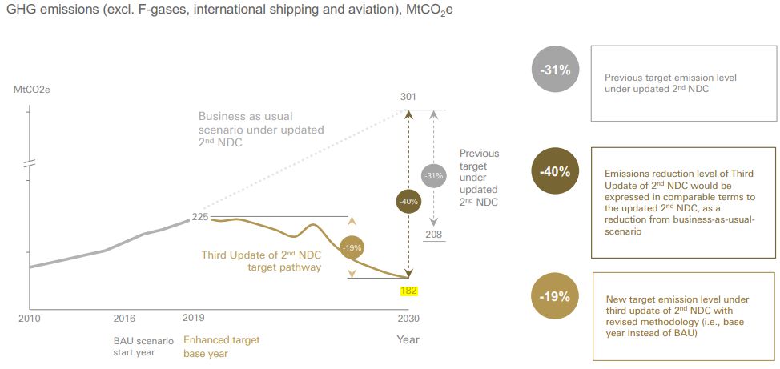
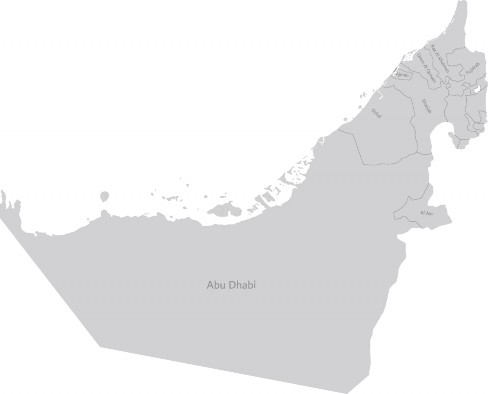
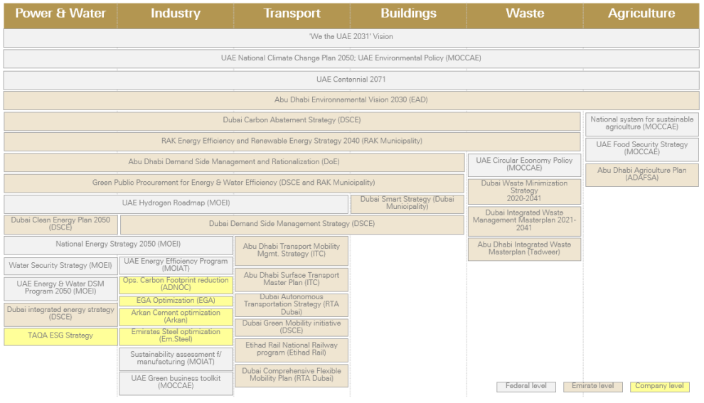
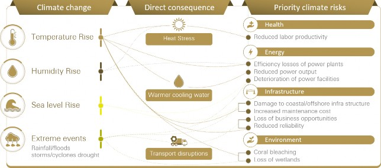
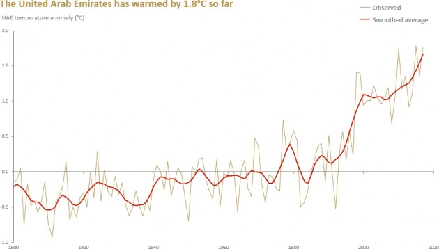
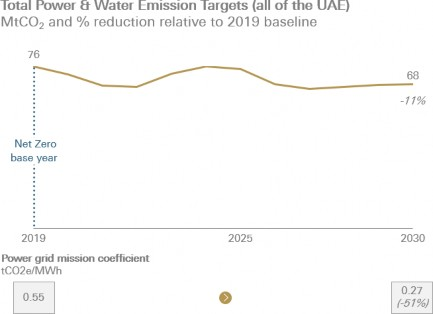
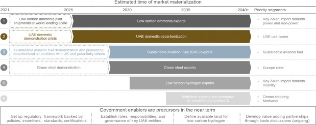
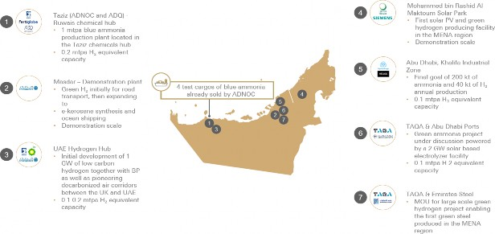
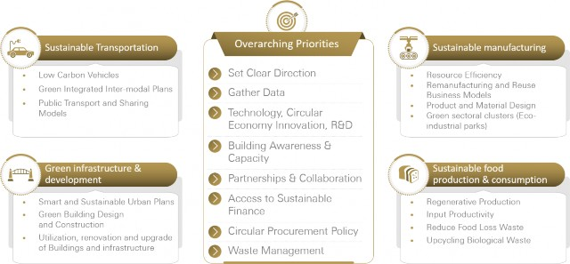
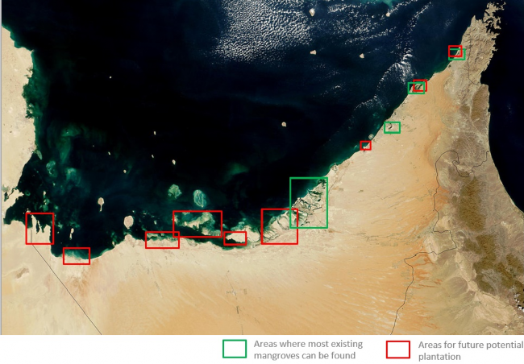

2023
Table of Acronyms
ACE Action For Climate Empowerment
ADAFSA Abu Dhabi Agriculture and Food Safety Authority
ADGM Abu Dhabi Global Market
ADNOC Abu Dhabi National Oil Company
AGEDI Abu Dhabi Global Environmental Data Initiative
AIM for Climate Agriculture Innovation Mission for Climate
AQ Air Quality
AYC Arab Youth Centre
AYCCC Arab Youth Council for Climate Change
BEV Battery Electric Vehicle
BRT Bus Rapid Transit
CBUAE Central Bank of the United Arab Emirates
CCfDs Capture Carbon Contracts for Difference
CCRN Climate Change Research Network
CCS Carbon Capture and Storage
CCUS Carbon Capture Utilisation and Storage
CH4 Methane
CLIX Climate Innovations Exchange
CO2 Carbon Dioxide
CO2eq Carbon Dioxide Equivalent
COP28 United Nations Climate Change Conference or Conference of The Parties of the UNFCC
DAC Direct Air Capture
DEWA Dubai Electricity & Water Authority PJSC
DoE Department Of Energy
DSCE Dubai Supreme Council of Energy
DSM Demand Side Management
EAD Environment Agency – Abu Dhabi
EGA Emirates Global Aluminium
EMEA Europe, Middle East and Africa
ENEC Emirates Nuclear Energy Company
EN-WWF Emirates Nature in Association With World Wide Fund for Nature
ESMA Emirates Authority for Standardizations and Metrology
ETAF Energy Transition Accelerator Financing
ETF Enhanced Transparency Framework
EV Electric Vehicle
EWEC Emirates Water and Electricity Company
FDI Foreign Direct Investment
F-gases Fluoridated Gases
GA Government Accelerators
GDP Gross Domestic Product
GHG Greenhouse Gas
GIAHS Globally Important Agricultural Heritage System
GW Gigawatt
GWP Global Warming Potential
ICBA International Centre for Biosaline Agriculture
ICE Internal Combustion Engines
ICTU Information To Facilitate Clarity, Transparency, And Understanding
IEA International Energy Agency
IoT Internet Of Things
IPCC Intergovernmental Panel on Climate Change
IRENA International Renewable Energy Agency
ITC Integrated Transport Centre
LEED Leadership In Energy and Environmental Design
LTS Long-Term Strategy
MAC Mangrove Alliance for Climate
Masdar Abu Dhabi Future Energy Company
MBRIF Mohammed Bin Rashid Innovation Fund
MENA Middle East and Northern Africa
MOCCAE Ministry Of Climate Change & Environment
MOEI Ministry Of Energy and Infrastructure
MOHRE Ministry Of Human Resources and Emiratisation
MOIAT Ministry Of Industry and Advanced Technology
MRV Measurement, Reporting and Verification
MRF Material Recovery Facility
MTPA Million Tonnes Per Annum
MW Megawatts
MWQI Marine Water Quality Index
N2O Nitrous Oxide
NAP National Adaptation Plan
NbS Nature-Based Solutions
NCCAP National Climate Change Adaptation Programme
NDC Nationally Determined Contribution
NDCA National Dialogue for Climate Ambition
Ne’ma National Food Loss and Waste Initiative
NGOs Non-Governmental Organisations
NPOs Non-Profit Organisations
NZS Net Zero Strategy
ODP Ozone Depletion Potential
OECD The Organization for Economic Cooperation and Development
PACE Partnership For Accelerating Clean Energy
PHSSR Partnership For Health System Sustainability and Resilience
PPAs Power Purchase Agreements
PPPs Public-Private Partnerships
RAKTDA Ras Al Khaimah Transport Authority
RDF Refuse Derived Fuels
RTA Road And Transport Authority
SAFs Sustainable Aviation Fuels
SDGs Sustainable Development Goals
SDME Solar Decathlon Middle East
SEWA Sharjah Electricity and Water Authority
SMEs Medium-Sized Enterprises
SNE Single National Entity
Solar PV Solar Photovoltaic
SWFG Sustainable Finance Working Group
T&S Transport And Storage
TAQA The Abu Dhabi National Energy Company
TWL The Thermal Work Limit
UACA The UAE Alliance For Climate Action
UAE United Arab Emirate
UIP University Innovation Program
UNEP United Nations Environment Programme
UNDP United Nations Development Programme
UNFCCC United Nation's Framework Convention on Climate Change
WETEX Water, Energy, Technology, And Environment Exhibition
WIM Warsaw International Mechanism
WiSER Women in Sustainability, Environment and Renewable Energy
WRI The World Resources Institute
WWF World Wildlife Fund
Executive Summary
Climate action is an imperative and will be a catalyst for sustainable economic growth and inclusive prosperity for the United Arab Emirates (UAE). As a result, the country has set a net zero emissions target by 2050 and developed a comprehensive strategic net zero initiative. The country’s efforts to reduce emissions have accelerated, and this NDC outlines plans for further initiatives. Subsequently, it is very likely that the UAE’s emissions have peaked already between 2019 and 2022 with reductions targeted towards 2030.
This National Determined Contribution (NDC) sets absolute, unconditional, economy-wide emissions reduction targets for 2030. The new reduction target for 2030 will reduce net greenhouse gas (GHG) emissions from the previously targeted figure of 208 MtCO2e, as announced in the Updated Second NDC (2022), to 182 MtCO2e. Despite sustained economic and population growth, this target represents an absolute GHG emissions reduction of 19% by 2030 relative to 2019.
These country-wide targets are complemented by sectoral targets for all domestic sectors (power and water generation, heavy industry, transport, waste, buildings, agriculture). Beyond these sectors, the UAE also aims to remove Carbon Dioxide (CO2) through nature-based solutions. These targets are supported by comprehensive sectoral plans, measures, and policy frameworks, developed through a whole-of-government approach. The result is a comprehensive roadmap to the 2030 target, paving the way to net zero by 2050. This NDC also considers the needs of vulnerable groups, including youth, women, children, and people of determination.
The UAE is increasing its capacity to adapt to the adverse effects of climate change and promote climate resilience. Changes in the region’s climate, exacerbated by an already harsh and arid environment, are already impacting people, environment, and infrastructure. The UAE is working towards becoming one of the most climate-resilient countries in the world. To achieve this, the UAE evaluated its exposure to potential climate risks, and assessed the potential impact on key sectors (energy, infrastructure, health, environment, and insurance). Specific adaptation plans are being developed for every sector to prioritise adaptation incorporation, execution, and tracking efforts based on national and sub-national policies.
Delivering on these mitigation and adaptation objectives will require financing, innovation, capacity building, and public engagement. The UAE is deploying policy measures to enable the private market to deliver the required financing (alongside the government), and as such is not expecting to require additional international support to deliver on these targets. A national technology and R&D strategy will support scaling and deploying the required technologies, including newer ones such as low-carbon hydrogen (blue, pink, and green hydrogen), and Carbon Capture and Storage (CCS). The transition will generate approximately 160,000 jobs, and appropriate upskilling and capability building for the transition is planned. The transition also provides an opportunity to position the UAE as an international clean energy hub, which can attract companies to set up production facilities or relocate production steps to the UAE.
This NDC contains the roadmap to deliver on the mitigation and adaptation targets put forward. Information to facilitate clarity, transparency and understanding (ICTU) is in Chapter 8 ‘ICTU table.’
1 Introduction
An integrated and high impact movement encompassing the entire global community is required to avoid the adverse effects of the climate crisis. The Earth is warming rapidly, and global temperatures have already surpassed the pre- industrial average by 1.1°C. Domestically, the UAE is particularly exposed to climate change impacts, including elevated temperatures and higher humidity for longer periods of the year, rising sea levels, and an overall higher likelihood of extreme weather events such as heavier precipitation and droughts1. Thus, the UAE initiated a journey of economic transformation from fossil-fuel based industry to a knowledge-based green economy. It is critical that no one is left behind in this journey. Consequently, the UAE actively engages all parts of society in their climate actions, especially women, youth, and people of determination (i.e., people with disabilities or with special needs).
In line with its commitment to the United Nations Framework Convention on Climate Change (UNFCCC) and the Paris Agreement, the UAE is acting on its commitment to limit global average temperature rise to a maximum of 2°C above pre- industrial levels, while pursuing additional efforts to help limit temperature increase to 1.5 °C above pre- industrial levels. To further accelerate climate action, the UAE also responded to the call of the Glasgow Climate Pact to revisit and strengthen 2030 targets by submitting an updated NDC in 2022.
Given the nation’s long-standing commitment to international cooperation and multilateral processes, the UAE will host the 28th Conference of the Parties to the UN Framework Convention on Climate Change (COP28) in November 2023. COP28 will mark the conclusion of the first Global Stocktake — a key moment to assess and provide a robust outlook on the effectiveness climate action. This stocktake will be a forum to devise further actions to close the gaps around mitigation, adaptation, loss, damage, and means of implementation. Likewise, the UAE President, His Highness Sheikh Mohamed bin Zayed Al Nahyan, has announced that 2023 will represent a “Year of Sustainability” for the UAE, and will host a year-long series of initiatives and events to foster collaboration and promote concrete and innovative solutions to address the climate crisis2.
The UAE views climate action not only as an imperative, but also as an opportunity for sustainable economic growth and socially inclusive prosperity. The UAE considers that there is and will be no inseparable long-run trade-off among emissions reductions and economic growth. A recent study conducted by the World Bank predicts that a green growth transition would enable the UAE economy to grow at 7% annually. This level of growth is aligned with the objective of the “We the UAE 2031” plan to double the country’s GDP to AED 3 trillion by 2031. 3 Moving towards a greener future is a tremendous opportunity, encouraging all countries to work together to unlock those opportunities related to renewable energy, green buildings, sustainable transport, water and waste management. The country therefore took a proactive stance to demonstrate leadership in this area. It was the first country in the MENA region to ratify the Paris Agreement. In 2022, the UAE also became the first country in the region to announce a strategic initiative to pursue net zero by 2050 with the aim of transforming all sectors of its economy in line with the objectives of the Paris Agreement4.
The Paris Agreement requests that parties submit a NDC every five years, detailing the actions they plan on taking to limit global warming to well below 2°C and their efforts to limit it to 1.5°C degree. Following its first NDC in 2016, which presented a sectoral target for clean and renewable energy, the UAE took a major step by setting economy-wide emissions reduction targets in its second NDC in 2020. These targets were expressed as emissions reductions from a business-as-usual scenario. The country then further strengthened the ambition of these targets in a revised, second NDC in 2022.
For the Third Update of Second NDC and as part of the UAE Net Zero 2050 Strategic Initiative, the country is taking further steps to significantly strengthen its emissions reduction target for 2030 in two ways:
First, the Third Update of Second NDC sets absolute emission reduction targets (compared to 2019 base year) replacing the previous commitment to reduce emissions with reference to business-as-usual scenario. Refer to Chapter 1.1 ‘Rationale for Submitting a Third Update of Second NDC’ for further details on the methodology change.
Second, 2030 net GHG emissions will be reduced from an expected 208 MtCO2e, as announced in the Updated Second NDC (2022), to 182 MtCO2e (Figure 1). Despite sustained economic and population growth over this period, this represents an absolute emissions reduction of 19% by 2030, compared to the 2019 base year level. If expressed in terms comparable to the Updated Second NDC — as a reduction from business-as- usual scenario — this represents a 40% decrease from the estimated 2030 emissions.
To achieve this ambitious target, the UAE developed a concrete implementation roadmap, including new governance structures to drive climate action and additional government interventions pre-2030. Details on the government interventions are provided in Chapter 4.3 ‘Mitigation: Sectoral Targets and Pathways’. This implementation roadmap is complemented by society-wide stakeholder engagement using approaches tailored for various key groups such as federal- and emirate-level government entities, non-state actors, civil society, and the international community.
Third Update of Second NDC vs. Updated Second NDC pathway and target

Figure 1: Third Update of Second NDC vs. Updated Second NDC targets
1.1 Rationale for Submitting a Third Update of Second NDC
The UAE has announced a goal of achieving net zero emissions by 2050 and recognises the need for all countries to accelerate their climate actions, including stronger commitments, concrete roadmaps, and more comprehensive policy frameworks for programmes and initiatives. Leading by example ahead of COP28, the UAE has enhanced its efforts to reduce emissions and developed the UAE Net Zero 2050 Strategic Initiative, which presents improved near-term targets for 2030, a target setting methodology change, and detailed policies. The aim is to establish effective and operational policy frameworks to put the UAE on a pathway through 2030 that is compatible with achieving net zero emissions by 2050.
As part of these efforts, the UAE moved away from business-as-usual scenario targets to base year and fixed level targets. Setting base-year and/or fixed level targets avoids the technical difficulties and uncertainty involved in estimating emissions of business-as-usual targets.5 Base-year and fixed-level targets are more certain and transparent. They also make it easier to track and account for progress.6 This Third Update of Second NDC reflects this update and the UAE’s continuous commitment and determination to scale emissions reduction ambitions in line with the stair-stepping mechanism of the Paris Agreement. To ensure comprehensive government ownership of these new targets, the UAE has followed a rigorous, inclusive, and consultative process with relevant domestic stakeholders.
1.2 UAE’s Alignment with the Sustainable Development Goals (SDGs)
The climate crisis poses numerous challenges and requires systemic change. At the same time, addressing the crisis should create opportunities for building resilience and improving social well-being with sustainable, low- carbon economic growth. Considering this, the UAE acknowledges the need to advance the deeply intertwined agendas of both the Paris Agreement and the UN 2030 Sustainable Development Agenda and its 17 Sustainable Development Goals (SDGs), which were developed as a ‘universal call to action to eradicate poverty, protect the planet, and ensure global prosperity.7
The UAE’s National Committee on SDGs — formed by the Cabinet in 2017 and comprising 15 federal-level government organizations — is responsible for coordinating and assessing the alignment of government policies with the SDGs, reviewing their implementation, monitoring, and reporting progress towards targets, and stakeholder engagement.8 The UAE conducted its first SDGs Voluntary National Review in 2018 and updates it annually, further expressing its commitment to support and pursue the 2030 Agenda. The latest submission occurred in 2022.
Ensuring the incorporation of the SDGs into the decision-making process of the Cabinet and of federal and emirate policies, the UAE’s National Committee on SDGs mapped the SDG targets to government interventions. Making progress to achieve the SDGs is a key component of each governmental entity’s strategic plan and is a measure of overall government performance. For this reason, the UAE’s National Committee on SDGs has developed an active engagement strategy to involve domestic and international stakeholders in the implementation of the SDGs and in their respective annual progress reports.9
Furthermore, the UAE made the SDGs a fundamental part of its vision and future ambitions by aligning the UAE National Agenda and its pillars to SDGs. The UAE National Agenda is the 7-year plan that led up to Vision 2021 and to the recently announced Vision 2031, which were developed by officials from 90 federal and local government entities.1011 Among the pillars of the UAE National Agenda is the achievement of a sustainable environment and the infrastructure required to support sustainable development that balances economic and social development.12 A number of mechanisms are being adopted to implement the priorities of the UAE’s National Agenda and the UN 2030 Sustainable Development Agenda, including the Government Accelerators (GA) initiative launched by His Highness Sheikh Mohammed bin Rashid Al Maktoum, Vice President and Prime Minister of the UAE and Ruler of Dubai, in 2016 to support federal and local collaboration on ambitious national objectives.13 One outcome of the Government Accelerators was the announcement of a strategic initiative to pursue net zero emissions by 2050. With rising climate change impacts, the UAE is determined to endorse an agenda that focuses on implementation, mitigation and adaptation opportunities that will drive change in alignment with the 2030 Agenda for Sustainable Development and the Paris Agreement.14 This NDC's targets, policies, and actions involve all relevant government entities and seek to build concerted efforts to guide climate action and progress towards the SDGs.
2 UAE National Circumstances and Institutional Arrangements
2.1 Geographical and Population Profile
The UAE, a young and progressive nation with over 9.5 million inhabitants,15 has undergone significant societal and economic transformation since its founding in 1971. With about 200 nationalities living and working in the UAE, it is a culturally and socially diverse country. This great diversity makes it imperative to engage a wide range of stakeholders and incorporate their diverse perspectives into decision-making about how to build climate resilience and bring about an effective transition to a low-carbon future. Due to the size of its young population,16 the UAE also actively encourages youth climate action (e.g., low-carbon class activity programmes,17 a dedicated digital sustainability platform for the youth,18 and a carbon ambassador programme) and also integrates gender inclusivity into its climate-related activities (e.g., a strong representation of women in UAE climate and energy community, such as in the UAE’s Special Envoy of Climate Change, and a dedicated platform for women in sustainability, environment and renewable energy19). Further details on inclusivity are provided in Chapter 7.4 ‘Inclusivity for Climate Action: Youth, Women and People of Determination.’

Figure 2: Map of the United Arab Emirates
2.2 Government Structure
As a federation of seven emirates, climate policies in the UAE are developed using a whole-government approach involving a wide range of entities in line with the legal and executive jurisdictions and roles as defined in the constitution. The UAE Council on Climate Action20, an inter-ministerial, inter-emirate governance body established in 2022, ensures alignment across federal and emirate-level policies and interventions.
The nation has taken decisive action to mitigate climate change and adapt to its impacts. In 2017, the UAE adopted the National Climate Change Plan 2017-2050, laying down a framework for the management of GHG emissions, climate change adaptation, and economic diversification driven by private sector innovation. In October 2021, the UAE embarked on a path towards net zero emissions, announcing the launch of a strategic initiative to pursue net zero, which builds on more than 30 existing strategies across all sectors (Figure 3). Additional policies, such as the Clean Energy Strategic Target 2035 in Abu Dhabi and the UAE Hydrogen Leadership Roadmap, were updated during the development of the net zero pathway. The UAE Net Zero by 2050 Strategic Initiative aligns with the Paris Agreement’s call to implement long-term strategies to reduce emissions, with the aim of achieving global net zero GHG emissions in the second half of this century.

Figure 3: 30+ programs considered in UAE Net Zero 2050 Strategic Initiative
2.3 Economic Profile and Sector Details
The economy of the UAE is growing, with projected nominal Gross Domestic Product (GDP) growth of 24% from 2019 to 2030.21 Its population is expected to grow by 14% from 2019 to 2030.22 It is also a non- Annex I country since it is “especially vulnerable to adverse impacts of climate change with low-lying coastal areas and prone to desertification and drought.”23 During the past 50-plus years, the UAE has drastically transformed its economy from the pre- oil era when the vast majority of the population worked in pearl diving, fishing and trading. After the discovery of oil, the UAE focused on developing its physical infrastructure (e.g., roads, electricity and water generation, ports) and social infrastructure (e.g., schools and medical facilities). The rapid growth in development of the economy necessitated a need for an expatriate workforce which in turn increased the demand for construction and infrastructure.24 The nation is still developing parts of its infrastructure, such as its public transportation network. The country is also expecting significant economic and population growth beyond 2030. Despite this growth, the UAE is committed to an absolute GHG emissions reduction target, aiming to decouple its economic growth from GHG emissions.
Despite being a major energy exporter, the UAE has long prioritised the diversification of its economy and has made major progress: The share of the UAE’s non-oil sector increased from roughly 30-40% in the 1970s to approximately 70% of total GDP25 today, including a well-developed tourism sector. The country has also developed a strong industry sector with heavy emitting segments (e.g., cement, steel, aluminium, petrochemicals) which are responsible for approximately 46% of total GHG emissions26 as of 2019. The transition to a low-carbon economy represents a chance to further diversify by growing a competitive, innovation-led economy, transforming its industries, and becoming an export hub for low- emissions technologies and fuels. For instance, the UAE launched the UAE Hydrogen Leadership Roadmap in 2021, targeting a 25% market share of low-carbon hydrogen and derivatives in key international markets by 2030, with an initial focus on Japan, South Korea, India, and Europe.27
While this low-carbon transition is accelerating, the UAE is also aware of its responsibility as a reliable energy provider and guarantor of global energy security, particularly amidst the current energy crisis. To drive the transition, the UAE is addressing the issue in several ways:
Tackling Oil and Gas Sector’s Climate Impact
The country is implementing policy measures to reduce its own oil and gas demand (as detailed in Chapter 4 ‘Mitigation’). The UAE Net Zero by 2050 Strategic Initiative targets to reduce the amount of gas used for power generation by approximately 30%, and a decrease of gasoline and diesel fuel consumption in its transportation sector by approximately 8% by 2030 (vs. 2019 baseline), despite significant economic and population growth.
On the supply side, production of UAE’s Murban crude oil already has a carbon intensity of less than half the global industry average, and the country’s oil and gas sector is committed to further reducing emissions. The Abu Dhabi National Oil Company (ADNOC) has a strong track record as a leading lower-carbon intensity energy producer, thanks to its use of zero-carbon grid power, a commitment to zero flaring as part of routine operations, and deployment of the region’s first carbon capture project at scale. ADNOC has maintained one of the lowest carbon emissions intensities in the world and has set a target to further reduce the intensity of its GHG emissions by 25% by 2030.28 It is allocating $15 billion to low- carbon solutions, including carbon capture and storage, electrification and investments in hydrogen and renewables (refer to Chapter 4.3.2 ‘Industry’ for further details).29 In addition, ADNOC has announced its net zero ambition by 2050.
Investing in Renewable Energy Abroad
Moreover, the UAE is also supporting other countries in their energy transitions and has invested more than $50 billion in renewable energy projects across 70 countries, including 27 island nations. The UAE plans to invest an additional $50 billion by 2035.30 In 2022, the UAE also announced the Partnership for Accelerating Clean Energy (PACE) with the United States (US). The UAE-US Partnership will catalyse US$100 billion in financing and other support in addition to deploying 100 new gigawatts (GW) of clean energy in the US, UAE, and emerging economies around the world by 2035.31 The first wave of investments under PACE allocates $20 billion to fund 15 GW of new clean and renewable energy projects in the US before 2035. These will be financed through $7 billion in cash equity from the private sector that will further catalyse $13 billion through US debt financing and other instruments. The country’s energy sector is also accelerating its investments in renewable energy. For instance, since 2006, the Abu Dhabi Future Energy Company (Masdar) has been one of the largest developers of renewable energy projects in the world and operates in more than 40 countries. Masdar currently has a portfolio of renewable energy projects with total capacity of over 20 GW operational or under development and total capital requirements of $30 billion, including secured or committed investments. The company aims to increase its renewable portfolio to 100 GW by 2030, through investments of more than $60 billion. By 2030, Masdar's renewable energy projects are expected to displace CO2e emissions by 95 million tonnes per year globally.32.
2.4 Climate Profile
The Arabian Peninsula is known for its water scarcity and intense heat. It is arid with sporadic rainfall and a sub- tropical climate that is hot in summer and mild to cool in winter. While the UAE is well adapted to these harsh desert conditions and has prospered despite its climate, the climate crisis is likely to increase pressure on the UAE’s environment, economy, and society as depicted in Figure 4. 33

Figure 4: Priority climate risks for the UAE34
Climate impacts are already severely affecting the UAE. As shown in Figure 5, average temperature increases are substantially higher in the UAE than the observed global average. Climate projections for the UAE and the Arabian Gulf region forecast increased temperatures coupled with higher humidity levels, longer hot and humid seasons, heavier precipitation, sea level rise, and changes in the salinity of seawater, together with an increased frequency and magnitude of natural disasters. This may lead to significant economic damage (e.g., an increase in global average temperature leads to rising sea levels, which can affect critical infrastructure such as cities, harbours, roads, desalination, and power plants). Around 85% of the UAE’s population and more than 90% of its infrastructure are located in coastal areas,35 making it vulnerable to even a slight increase in sea levels and subsequent coastal erosion and flooding of low-lying areas. The UAE has multiple artificial islands that are particularly at risk of flooding due to sea level rise. Rising water temperatures may also permanently damage crucial eco-systems such as corals and wetlands which serve as carbon sinks, thus further exacerbating climate change.36 Given its awareness of the devastating impact of climate change and of the cost of inaction, the UAE is committed to reducing its GHG emissions and enhancing its climate adaptation efforts to ensure climate resilience.

Figure 5: United Arab Emirates temperature anomaly37
3 Stakeholder Engagement in NDC Planning and Preparation Process
3.1 Whole-of-Government Approach
To develop the UAE Net Zero 2050 Strategic Initiative (including the 2030 targets outlined in the NDC), the UAE engaged all relevant entities in a society-wide process led by the Ministry of Climate Change and Environment. All levels of government (including federal-, emirate-, and city- and municipality-level) worked together to develop the roadmap to reach 2030 targets as outlined in this NDC. The process included more than 50 bilateral meetings with both public and private entities, dedicated workshops through more than 110 touchpoints, and around 800 feedback points across stakeholders.
3.2 Inclusion of Non-Government Stakeholder Groups
Collaboration between public and private sectors is necessary to tackle climate change, and the government has consequently engaged key private sector entities and local NGOs in the NDC development process. The UAE launched the National Dialogue for Climate Ambition (NDCA) as a platform to encourage climate collaboration across all sectors of the economy, including manufacturing, cement, waste, transport, and energy. Each month the NDCA platform brings together key decision-makers from federal and local government entities, as well as private sector representatives and NGOs, at stakeholder assemblies dedicated to a different sector. The monthly assemblies discuss sectoral requirements, priorities, and future directions to scale up decarbonisation efforts38
The UAE Alliance for Climate Action (UACA) was also launched in association with the World Wildlife Fund (WWF), the first climate partnership of this type in the MENA region. UACA is part of nine global alliances dedicated to increasing non-state actor readiness to set climate targets in line with science and the Paris Agreement.39 UACA also supports the implementation of the UAE Climate-Responsible Companies Pledge, signed by more than 90 companies (as of May 2023) across key sectors such as steel and aluminium and cement. Signatories include Beeah, Majid Al Futtaim Group, HSBC, Masdar, Emirates Steel, EGA, TAQA, and TotalEnergies, among others.40, 41 The UAE also reaches out to key social groups and vulnerable segments of society, including advocates of the younger generation and women. Further details on inclusivity are provided in Chapter 7.4 ‘Inclusivity for Climate Action: Youth, Women and People of Determination.’
3.3 Cabinet Endorsement
Following the stakeholder engagement process, UAE’s NDC was endorsed by the cabinet, the highest executive power in the country.
4 Mitigation
4.1 National Target
The UAE is committed to achieving a 19% reduction by 2030 in economy-wide net GHG emissions, compared to 2019 levels (of 225 MtCO2e). The UAE will consider the outcome of the first Global Stocktake and plans to submit a new NDC in 2025 in line with the Paris Agreement milestones. Remaining total net GHG emissions in 2030 are projected to be 182 MtCO2e, with sectoral targets and pathways up to 2030 described in detail in Chapter 4.3 ‘Sectoral Targets and Pathways.’ Sectoral targets and pathways beyond 2030 will be described in UAE’s Long-Term Strategy (LTS). The UAE plans to launch its LTS before COP28. Information on the 2019 inventory sources is provided in Chapter 8 ‘ICTU table’.
These new targets reflect an improvement over the previous business-as-usual scenario targets under the Updated Second NDC and are the product of both an enhanced target-setting methodology and an increased level of ambition. Despite being categorised as a non-Annex I country, the UAE is committing to a base-year and fixed-level target to ensure maximum transparency and measurability. The country is improving on the previous common practice of anchoring emissions reductions to future business-as-usual42 development. Moreover, the new fixed-level target of 182 MtCO2e is significantly lower than the previous business-as-usual-based target, which in absolute terms equates to 208 MtCO2e. Compared to the prior 31% reduction vs. business-as-usual, this new absolute target of 182 MtCO2e is a significant improvement, since it would correspond to a 40% reduction compared to business-as-usual.
4.2 Target Scope and Coverage
The new base-year and fixed-level targets are economy-wide and cover all domestic sectors, including land use, land use changes, and forestry. They cover all national GHG emissions, including Carbon Dioxide (CO2), Methane (CH4) and Nitrous Oxide (N2O). However, the targets do not cover emissions from Fluoridated Gases43 (F-gases), which are typically part of closed-system cooling applications, since a comprehensive and robust study of these gases is still under way. In preparation for ratification of the Kigali Amendment to the Montreal Protocol, the UAE plans to include F-gases in future NDC submissions and is updating its regulatory framework to address F-gases.
While domestic aviation and shipping is within the scope of this Third Update of Second NDC, emissions from international aviation and international shipping are not. Although they are out of scope, relevant local entities contribute towards emissions reduction efforts in these sectors by, among other tactics, promoting the production and use of sustainable aviation fuels (SAFs) and by exploring green shipping corridors, which are special maritime routes used to test and showcase the feasibility of low emissions shipping fuels and technologies. The UAE is also supporting decarbonisation targets set by the International Civil Aviation Organization (ICAO) and the International Maritime Organization (IMO). The nation plans to increase the production of e-kerosene (one type of sustainable aviation fuel) and production of green or blue ammonia or methanol (for shipping), with significant ramp-up post-2030. Further details are provided in the UAE's Long-Term Strategy (LTS).
4.3 Sectoral Targets and Pathways
The sector split is in line with the UAE Net Zero by 2050 Strategic Initiative. All emissions from burning of fossil fuels to generate power and water are shown in the power and water generation sector, however these emissions are also distributed to the consuming sectors to drive energy efficiency and informed fuel switch decisions in these sectors (e.g., emissions in the industrial, transport, waste, buildings, and agriculture sectors include indirect emissions from power and co-generation plants). Emissions related to the production of oil and gas are accounted for in the industrial sector. This split is chosen to facilitate implementation, as entities who are typically focused on one sector can be accountable and progress can be measured easily. The sectoral break-down as per IPCC is included in the ICTU table.
An overview of all sectoral targets is provided in Table 1. The emissions in the industrial, transport, waste, buildings, and agriculture sectors include indirect emissions from grid-connected power and co-generation plants (i.e., sectors include power and water emissions).
An enabling regulatory framework is required to reach these targets. The UAE already introduced several emissions reduction policies in the recent years. However, additional policy levers are required when the increased ambition is considered. These additional policies are described in the following sectoral sections, have been approved by the UAE cabinet and are currently being detailed further.
Table 1: Overview of Sectoral Targets44
|
Sector |
2019 base year |
2030 target year |
Percentage reduction |
|
Power grid emission coefficient45 |
0.55 tCO2e/MWh |
0.27 tCO2e/MWh |
-51% |
|
Industry emissions |
103 MtCO2e |
98 MtCO2e |
-5% |
|
Transport emissions |
42 MtCO2e |
42 MtCO2e |
-1% |
|
Waste emissions46 |
13 MtCO2e |
14 MtCO2e |
+8% |
|
Buildings emissions |
62 MtCO2e |
27 MtCO2e |
-56% |
|
Agriculture emissions |
6 MtCO2e |
4 MtCO2e |
-22% |
4.3.1 Power and Water Generation
Sectoral Base Year and 2030 Target
In 2019 the UAE’s power and water sector emitted 76 MtCO2e GHG emissions, including emissions from grid- connected power and co-generation plants (e.g., gas power plants, gas fired co-generation power and water plants, waste-to-energy power plants, but not captive, non-grid-connected industrial power plants). By 2030, the UAE intends that significant energy delivered will come from zero carbon sources such as renewables and nuclear, corresponding to a power grid emission coefficient reduction of 51% compared to 2019 base year. This accounts for an expected two-fold increase in total grid-delivered power demand over the same period, resulting from expanding economic activity, electrification, and the production and connection of significant captive demand power plants to the electrical grid by key industrial players.

Figure 6: GHG reductions in the power & water generation sector
The target will be achieved through a steep ramp-up of clean energy, primarily solar photovoltaic (PV), supported by nuclear power which is already in development. The UAE’s current plans for 19.8 GW47 of clean energy sources (solar PV, concentrating solar-thermal power, and nuclear) by 2030 are being updated to reflect the more ambitious targets. The commitment to renewable energy is key UAE’s climate action as it has implications for other sectors.
Existing Federal Policy Levers
The UAE has implemented multiple policy levers to support and accelerate the decarbonisation of its power sector, most of which are expected to be updated to reflect these more ambitious targets. The UAE Energy Strategy 2050 targets a 30% clean energy capacity mix by 2031 (and 50% by 2050), as well as a reduction of final energy demand through individual and institutional consumption efficiency of 42% to 45% by 2050. The strategy has recently been revised to reflect greater climate ambitions removing the 12% target of clean coal from the energy mix and an updated power and water sector pathway towards achieving the Net Zero by 2050. It also aims to strengthen Interconnections with GCCIA and potential other countries. Furthermore, the UAE National Water and Energy Demand Side Management Programme 2050 (UAE DSM programme) targets a 40% reduction in energy consumption and 51% reduction in water consumption compared to business-as-usual by 2050.48 The UAE Water Security Strategy 2036 targets a 21% reduction in total demand for water resources.49
Additionally, the UAE is assessing its power price structure in a collaborative set-up to better reflect generation costs and differentiate prices by time (not necessarily implying immediate changes to customer tariffs), creating incentives to save power overall and to shift load to support the integration of renewable sources. The UAE will also develop a national policy with indicative CO2 emission targets for the power sector, which will cascade down to emirate-level regulators and system operators.
Existing Emirate-Level Policy Levers
Several emirate-level policies such as Dubai’s Clean Energy Strategy 2050, Dubai’s Carbon Abatement Strategy 2030, the Clean Energy Strategic Target 2035 for Electricity Production in Abu Dhabi, Abu Dhabi’s Policy for Energy Production from Waste, and Ras Al Khaimah’s Energy Efficiency and Renewable Energy Strategy 2040 also include targets for renewable energy and/or demand-side management. Relevant policies are expected to be reviewed and potentially revised to reflect the new 2030 targets. In anticipation of the new 2030 targets and the UAE Net Zero 2050 Strategic Initiative, Abu Dhabi is currently developing an emirate-level climate change strategy. The Clean Energy Strategic Target 2035 for Electricity Production in Abu Dhabi aims to generate 60% of the emirate’s electricity from clean and renewable sources by 2035.50 The emirate of Abu Dhabi also issued the Water Management in District Cooling Plants Policy to regulate the identification of potential water sources for district cooling providers.51 The policy paves the way for the use of recycled water and sea water for district cooling purposes. It is complemented by the Recycled Water Policy – which facilitates the maximum utilisation of recycled water in Abu Dhabi, reducing desalination demand and associated energy consumption 52 – and by the Integrated Water Model – which simulates water demand and uses various scenarios to optimize all supply sources.
Relevant federal and emirate level regulators are updating their energy mix requirement plans. These plans will also include accelerated land allocation and siting for renewable energy projects. While the existing governance of the federal and emirate level power sector will be maintained, coordination among emirates will be strengthened to ensure appropriate grid development and land allocation.
Selected Examples of Current Decarbonisation Initiatives
Energy Generation
With three of the world’s largest solar power plants (2 GW,53 1.2 GW,54 and approximately 2 GW with an additional 0.75 GW55 under construction and an additional 1.5 GW in tender stage 56), and the world’s lowest levelised cost of electricity produced by photovoltaics, the UAE is well on its way to large- scale solar PV power. Masdar also contributes to the UAE’s solar scale-up and plans to invest an additional $8 billion by 2030 in domestic renewable energy projects, primarily as part of the Abu Dhabi solar program.
The UAE is also reducing emissions from its baseload power generation, which produces energy at a constant rate even during periods of low solar radiation (e.g., during cloudy days or at night), thus complementing intermittent solar PV sources. For example, the UAE has moved away from coal power generation. The Hassyan power plant, which was originally designed to operate on coal in a bid to diversify the power mix, has been switched to run on natural gas in 2022. Moreover, it is built with carbon capture and storage-ready specifications.
To further accelerate and complement the deployment of renewable energy sources, zero- or lower-emissions baseload power generation continues to be brought online. The Barakah nuclear power plant started to deliver 2.8 GW to the grid since 2020 after they obtained license from the Federal Authority for Nuclear Regulation (FANR). An additional 1.4 GW was added to the mix in October 2022 and entered commercial operations in February 2023. Once fully operational in 2025, it will generate 5.6 GW supplying up to 25% of the UAE’s electricity needs.57 Baseload power generation is further diversified by waste-to-energy power plants which over their lifetime reduce emissions from landfills. There is already an operational 30MW plant in Sharjah.58 A 200 MW plant in Dubai and 70 MW plant in Abu Dhabi are also planned. 59
The UAE is also deploying large-scale energy storage technology. Abu Dhabi is home to one of the world’s largest virtual battery plants with a capacity of 108 MW, reducing the need for additional gas power plants, while a 250 MW pumped-storage hydropower plant is also set to be commissioned in Dubai by the end of 2024.60 The batteries of Abu Dhabi’s virtual battery plant are distributed over 10 sites across the emirate, yet are connected and controlled as one plant, making it in a large virtual battery. A further 300 MW in battery energy storage system is under development and will become operational in 2026. Dubai is also developing a 700MW molten salt thermal energy storage system which will be commissioned in 2023/2024.61 These facilities will support the integration of renewables into the grid.
To help drive demand for clean energy, the emirate of Abu Dhabi also issued a clean energy certificates scheme policy. The certificate is a voluntarily tradable instrument in which all energy attributes — representing the environmental and social benefits associated with the generation of electricity — including all associated carbon attributes, will be transferable.62
Water Generation
The UAE is also decarbonising its energy-intensive desalination sector by using low-carbon reverse osmosis (RO) technologies to produce potable water. Abu Dhabi will be home to one of the world’s largest reverse osmosis plants, sufficient to meet the water demand of around 350,000 households. The first phase (of 2 phases) started operation in 2022 and reached 50% production capacity. The RO plant is expected to provide an annualized emissions reduction of 4 million tonnes of CO2e after full completion in 202763. Another three desalination projects with capacities of 120 MIGD,64 70 MIGD,65 and 100 MIGD66 are expected to become operational between 2025 and 2026. Moreover, Dubai aims to produce 100% of desalinated water capacity using clean energy or waste heat by 2030.67
Energy Sector Companies
The Abu Dhabi government-controlled energy holding company (TAQA), one of the largest integrated utility and energy groups in EMEA with operations in power and water generation, is also committed to the energy transition. For its UAE portfolio, the company set a 33% Scope 1 and 2 emissions reduction target by 2030 compared to 2019 base year and aims to achieve net zero by 2050. The company is also implementing several energy efficiency and grid modernisation measures to reduce losses in water distribution by 25% by 2030.68 Dubai Electricity & Water Authority (DEWA) PJSC, the sole provider of electricity and water for the Emirate of Dubai, also outlined plans to achieve net zero emissions by 2050 and significantly invested in Dubai’s large scale solar park and in multiple energy storage projects (such as the currently under construction 250MW pumped-storage hydropower plant and the currently under construction 700MW molten salt thermal energy storage system). Emirates Water and Electricity Company (EWEC) also forecasts a 50% carbon emissions reduction from more than 40 million tonnes in 2020 to approximately 20 million tonnes by 2025.
4.3.2 Industry
Sectoral Base Year and 2030 Target
The UAE’s industrial sector emitted 103 MtCO2e in 2019, including emissions related to the power grid–related and captive power production from key industrial players (i.e., electricity generation managed off-grid by oil and gas and aluminium producers for their own energy consumption). Planning is already underway to connect captive power production to the grid. In the upcoming years, the UAE will connect ADNOC’s offshore production operations through a high-voltage, direct-current (HVDC) transmission system (3.2 GW installed capacity) and EGA’s power generation assets (6.5 GW total power generation capacity) to the grid. Details on the decarbonisation of power grid–related emissions are provided in Chapter 4.3.1 ‘Power and water generation.’
By 2030, the UAE’s emissions from the industrial sector will decrease by 5% compared with the 2019 base year level, while the country is increasing the industrial output by around 100% by 203069, thus aiming to decouple GHG emissions from production growth. However, the country faces challenges in reducing its industrial sector emissions. Significant economic activities stem from heavy emitting sectors such as cement, aluminium, and steel production, and approximately 30% of the UAE’s GDP is related to its energy production. The oil and gas sector has a comparatively low carbon intensity as a product of its advantageous geology, decades of advanced reservoir management practices, and continued investments in the decarbonization of its operations and portfolio. These historic advantages leave less options to reduce emissions.70
Existing Federal Policy Levers
To reduce industrial emissions, the UAE has implemented multiple policy levers. The UAE DSM programme aims to improve the industrial sector’s energy efficiency by 33% by 2050, compared to business-as-usual, by enacting a number of emirate and company level initiatives for the top 50 most energy-consuming companies in the nation, which collectively represent the vast majority of industrial emissions.71 Initiatives include ISO 50001 certification or submission of DSM improvement plans every three years, as well as annual reporting of energy demand and emissions to the relevant government authority.72 The country also introduced the Industrial Technology Transformation Index (ITTI), a comprehensive framework to measure the digital maturity and sustainability of factories and formulate a roadmap for industrial transformation.
Existing Emirate Level Policy Levers
The federal UAE DSM programme is supported by emirate level demand side management strategies such as Dubai’s Demand Side Management Strategy, Abu Dhabi’s Demand Side Management and Energy Rationalisation Strategy 2030, and Ras Al Khaimah’s Energy Efficiency and Renewable Energy Strategy 2040. Abu Dhabi also launched the Abu Dhabi Industrial Strategy which aims to increase production efficiency and advance the transition to a circular economy. As part of this strategy, the emirate is currently developing a regulatory framework for the circular economy. In addition to this, Abu Dhabi is currently developing an emirate-level policy on low- carbon hydrogen, providing a framework to a low- carbon hydrogen economy.
New Policy Levers to Close the Gap Towards the More Ambitious 2030 Target
The UAE has approved additional policies to accelerate its industrial decarbonization:
Carbon registry and trade system
One policy involves a carbon registry and trade system covering all sectors. The scope and details of the carbon registry and trade system are being developed and will include a clear monitoring, reporting and verification framework, and free allowances that will be gradually reduced over time. It should also enable trade of international carbon credits recognized under Article 6 of the Paris Agreement.
Process Switch
Since a large share of the UAE’s industrial emissions stems from cement clinker production, the UAE is also planning to develop product standards for blended cement and concrete. This incentivizes substituting cement clinker with alternative binding materials such as by products from industrial processes (e.g., fly ash and slag) to reduce the emissions and energy intensity of cement production. The UAE will also introduce a policy to gradually phase-out Ordinary Portland Cement (OPC) production facilities by mandating new plants to focus on the production of blended cement types.
Carbon Capture and Storage (CCS)
Carbon capture and storage (CCS) solutions are key to decarbonising the UAE’s heavy emitting sectors and are particularly relevant to reducing emissions from the chemical process associated with the manufacturing of cement. The UAE is also designing a CCS policy package which includes plans to introduce Carbon Contracts for Difference (CCfDs) for carbon capture, regulated Transport and Storage (T&S) and liability transfer policies. CCfDs offer long- term contracts to pay for the difference between any carbon price and actual abatement costs and are a key tool for overcoming cost barriers. The T&S and liability transfer policies support the roll-out of a CCS infrastructure network. This includes setting up a regulated scheme to remunerate CCS network operators as well as a liability transfer from storage operators to the government.
Hydrogen
Similarly, CCfDs and regulated T&S policies will be applied to accelerate low-carbon hydrogen production, complemented by a hydrogen direct reduced iron (DRI) steel quota, and government offtake agreements for the built environment (for hydrogen DRI and green cement).
The UAE is detailing a national hydrogen strategy that will primarily aim to create and satisfy the domestic demand, and also export to strategic partners globally and to countries that cannot satisfy the anticipated local demand.
Selected Examples of Current Decarbonisation Initiatives
Hydrogen:
The UAE is already pursuing its goal of securing its early mover advantage in the production of low-carbon hydrogen (meaning hydrogen that is produced using methods that are largely free of GHG emissions such as blue, pink, and green hydrogen) and its derivatives, which are essential to decarbonise the UAE’s heavy emitting sectors such as cement, steel, and aluminium production.
Within the We the UAE 2031 vision, the UAE strives to become a top global producer of low-carbon hydrogen, continuing its pioneering effort in driving the global energy transition and environmental stewardship, while contributing to a prosperous future for all. The roadmap presented in Figure 7 defines the UAE’s ambitions and charts a pathway to becoming a low-carbon hydrogen exporter. Figure 8 illustrates the currently planned low- carbon hydrogen projects (blue and green hydrogen) in the UAE.73

Figure 7: UAE’s hydrogen leadership roadmap74

Figure 8: Planned low-carbon hydrogen projects in the UAE 75
Key government entities are supporting the nation’s strategic hydrogen leadership roadmap. For example, Abu Dhabi National Energy Company (TAQA), Mubadala, and ADNOC invested in Masdar. Masdar is planning to produce up to 1 million tonnes of green hydrogen per year by 2030 with hydrogen production facilities in the UAE and abroad. To drive the UAE’s green hydrogen economy, Masdar set up strategic partnerships with, among others, Siemens Energy, TotalEnergies, Etihad Airways, Lufthansa, and Khalifa University to explore the production of green hydrogen and sustainable aviation fuels. Masdar also has a $5 billion strategic alliance with ENGIE to develop green hydrogen plants. Dubai already operates a green hydrogen pilot plant producing 20 kgp per hour at the Mohammed bin Rashid Al Maktoum Solar Park. This pilot plant is the first of its kind in the MENA region.
Heavy Emitting Sectors
The UAE’s heavy emitting sectors and its oil and gas sector are also taking actions to reduce emissions. ADNOC aims to become a diversified net zero emissions company by 2050 and has taken steps to reduce and capture emissions. The company had already implemented a zero routine flaring policy in the early 2000s, resulting in an 89% reduction in gas flaring since the company’s inception. Measures to minimize flaring include installation of flare gas recovery systems, regular leak detection and repair programmes, and green completions during drilling. The company installed the region’s first commercial- scale carbon capture utilisation and storage (CCUS) facility, Al-Reyadah, with 800,000 tonnes per year of CO2 capture capacity. There are plans to expand its carbon capture capacity to 5 million tonnes per year by 2030. Since January 2022, 100% of ADNOC’s grid power has been supplied by nuclear and solar energy sources through procurement of green energy. Through its investments in Masdar, ADNOC has committed to deploying a combined capacity of more than 23 gigawatts of renewables and expects to reach over 100 gigawatts by 2030. The company’s oil and gas production is also one of the least emissions- intensive operations in the world, and ADNOC aims to decrease its emissions intensity a further 25% by 2030. It is also committed to an upstream methane intensity target of 0.15% by 2025, one of the lowest targets in the Middle East.76 Additionally, ADNOC has allocated $15 billion to low-carbon solutions such as carbon capture, electrification, new CO2 absorption technology, and enhanced investments in hydrogen and renewables
Emirates Global Aluminium (EGA), which is the biggest industrial company in the UAE outside of the oil and gas sector, also has a clear roadmap to net zero emissions by 2050. The company began sourcing 100% of its grid electricity from renewables in 2021. The GHG emissions intensity of its metal products is 35% lower than the global industry average, and its PFC emissions are 91% below the global average. Meanwhile, Emirates Steel, the UAE’s largest steel and building materials manufacturer, cooperates with ADNOC, which operates the Al-Reyadah CCUS facility, to capture the carbon from the steel manufacturing process. The company also operates a steel scrap shredding facility which recycles steel for use in its electric arc furnace. Emirates Steel also invests in low-carbon hydrogen as illustrated in Figure 7 and announced the planned development of a large-scale green hydrogen project enabling the first green steel produced in the MENA region. The company also targets a 40% reduction of Scope 1 & 2 emissions by 2030 (compared to 2019).
In 2022, Lafarge Emirates Cement, one of the largest cement producers in the United Arab Emirates, announced its intention to install a waste heat recovery (WHR) plant at its Fujairah cement facility. The plant will be the first in the UAE to use an organic Rankine cycle (ORC) technology. Union Cement Company (UCC) also recently upgraded its WHR plant from 12 MW to 26.5 MW using the latest technology. Similarly, the extension of Taweelah A1 project included a WHR facility, and a successful engineering procurement and construction project built a WHR power plant at Sharjah Cement Factory (SCF).
The UAE is also setting up a UAE Net Zero Concrete Leadership Group with clinker and concrete producers, construction companies and consultants, and relevant government authorities, discussing decarbonization levers for cement and concrete in a series of workshops.
Food Systems: Fertilizer Production and Food Processing
Fertiliser production is a major source of GHG emissions in food systems, alongside agriculture, land use change activities, and waste. In the UAE fertiliser production generated approximately 2MtCO2 in 2019. The UAE is home to Fertiglobe, one of the largest nitrogen fertiliser producers in the MENA region formed as a strategic partnership between OCI and ADNOC, and it is well-positioned to develop the blue and green ammonia production capacities required for fertilizer production. Fertiglobe announced a clean ammonia execution roadmap in 2021 and is collaborating with Masdar and ENGIE to develop a 200MW green hydrogen facility to produce green ammonia by 2025. Fertiglobe is also advancing a large-scale production facility in Abu Dhabi where blue ammonia will be made from nitrogen and blue hydrogen derived from natural gas with carbon capture and storage. The blue ammonia plant is expected to become operational post 2025, with a production capacity of 1,000ktpa. The company also aims to reduce absolute Scope 1 and 2 emissions by 20% by 2030 compared to 2019 and to aims to achieve carbon neutrality by 2050.
4.3.3 Transport
Sectoral Base Year and 2030 Target
The UAE transport sector emitted 42 MtCO2e in 2019, primarily from the burning of gasoline and diesel in internal combustion engines (ICE). The remaining emissions are from transport-related energy consumption (e.g., power for battery electric vehicles) and metro operations. The primary emissions sources in the transport sector are private passenger cars, busses, heavy-duty trucks, and mechanical vehicles such as cranes and excavators.
Although its population is expected to grow 14%, accompanied by a 24% increase to nominal GDP, by 2030, the UAE will stabilise and even slightly decrease transport sector emissions by 1% by 2030, compared to 2019. This target represents a significant reduction in emissions per kilometre travelled, with an emissions reduction of 20% per passenger kilometre travelled and a 40% reduction of emissions per freight tonne-kilometre. Ambitious public transport projects, such as the construction of passenger and freight rail networks connecting all emirates, are under way. However, these projects are time intensive, and their full emissions reduction potential will only be achieved after 2030.
Existing Federal Policy Levers
The UAE is driving the decarbonisation of the transport sector with a series of policy levers. One example is the UAE National Smart Mobility Strategy, which aims to elevate the UAE to one of the world’s leading countries in smart intermodal mobility. It is structured around the pillars of compatible infrastructure, integrated mobility systems, and dynamic policies and regulations and has five main objectives: safety, sustainability, efficiency, reliability, and a seamless experience.77 In 2022, the UAE also announced the launch of a national BEV national roadmap in 2022 to develop BEV infrastructure and stimulate the uptake of BEVs.
Decarbonisation of Passenger and Freight Transport
In 2015, the country introduced far-reaching fuel price reforms by removing subsidies linking gasoline and diesel prices to international market prices.78 Furthermore, a new fuel standards rule requires that diesel comply with 10 ppm sulphur content and Euro 5 standards.79 New motor vehicles must comply with Euro 4 performance standards; a gradual move to Euro 5/6 is planned.80
Existing Emirate-Level Policy Levers
Passenger and Freight Modal Shift
To reduce private vehicle usage, emirate-level governments also promote sustainable urban growth focused on mixed-use developments and active transport (e.g., cycling and walking). This is outlined in urban master planning strategies such as Dubai 2040 Urban Master Plan, Dubai’s First and Last Mile Strategy, Abu Dhabi’s Surface Transport Masterplan, or Rafah Ras Al Khaimah’s sustainable community guideline. Dubai’s First and Last Mile Strategy encourages the shift to public transport by providing multiple mobility options for the first and last part of a journey leading to or from a public transport station such as buses on-demand, taxis, carpooling, electric scooters, and bicycles. Abu Dhabi’s Surface Transport Masterplan also provides policy directions promoting multi-modal transport networks and enhancing pedestrian accessibility.
New Policy Levers to Close the Gap Towards the More Ambitious 2030 Target
The UAE has approved additional policies to accelerate the decarbonisation of the transport sector.
Passenger and Freight Modal Shift
A comprehensive policy package will focus on further expanding public transportation systems (such as metro and tram) and freight rail infrastructure across the country. In parallel, public transport will be improved through inter-modality initiatives connecting multiple types of transport together. This might be achieved by expanding existing first and last mile mobility solutions and introducing a unifying smartphone application that includes real-time information about transport options, among other possibilities. Publicity and awareness campaigns will inform the public about the availability of public transport and promote its usage. The UAE will also provide priority lanes for buses and toll adjustments to benefit group transports and to incentivise the uptake of public and shared transportation.
Decarbonisation of Passenger and Freight Transport
Another comprehensive policy package will focus on vehicle electrification. Incentives for Battery Electric Vehicle (BEV) and Fuel Cell Electric Vehicles (FCEV) owners that currently only apply in some emirates, such as free parking in Dubai, will possibly be rolled out across the country. This policy package will also include BEV and FCEV subsidies, such as CAPEX grants, lower registration fees and tolls for BEVs and FCEV, and additional road privileges, such as priority lanes and dedicated parking. The policy package will furthermore include policies supporting the creation of a comprehensive charging infrastructure network spanning the entire UAE, including policies for utility companies and gas station operators to build a country-wide BEV infrastructure, mandates for real estate developers to install BEV charging stations in parking lots, and subsidies for private companies to cover costs for charging stations in less economically viable locations. The UAE also prepares to phase out internal combustion engine vehicles and plans to restrict usage of new ICE vehicles. As part of the policy package, a national guideline on the construction of BEV infrastructure has already been developed and the required specs for BEV charging stations on federal roads have been defined.81 At the emirate level, Abu Dhabi also issued a BEV charging infrastructure policy to set out stipulations and criteria for establishing a charging network across the emirate.82 Furthermore, the nation is in the process of establishing a policy for BEVs, and a platform for BEV chargers that also includes a mobile application is in development.83
Examples of Current Decarbonisation Initiatives
Passenger and Freight Modal Shift
The UAE is proactively driving the decarbonisation of the transport sector through a series of initiatives, beginning with the construction of a 1,200 km freight rail network in 2014. Stage one of the network, encompassing 264 km, has been operational since January 2016, while stage two will begin operations in 2023 and will extend to more than 605 km. Each train carries the freight equivalent of approximately 300 trucks, thereby leading to CO2e reductions of 70- 80% per tonne of freight.84
In Dubai, as per the currently approved Rail Master Plan, the self-driving metro network will be ultimately expanded from the current 89 kilometres to around 379 kilometres85. This plan is reviewed and updated periodically considering Dubai’s urban and economic development trends. Dubai also currently investigates the feasibility of constructing a new line that will expand the network by around 30 kilometres by 2030. The number of metro ridership in the year 2030 is expected to rise to around 300 million passengers compared to the 225 million passengers in 2022. The Road and Transport Authority Dubai (RTA Dubai) is also working on autonomous, first- mile/last-mile shuttles and Bus Rapid Transit (BRT) to facilitate inter-modality (the connection of different modes of transport). The goal is to make 25% of all transport trips in Dubai smart and driverless by 2030. Lastly, 262 km of metro tracks will be constructed across the rest of the UAE, with 50% of these in Abu Dhabi and 50% in urban hubs in the northern emirates. By 2030, 142 km of these metro lines will be operational. Inter-emirate public bus routes already connect all emirates, with Ras Al Khaimah launching new, intra-emirate lines in 2022.86
Furthermore, Dubai, Abu Dhabi and Sharjah are championing sustainable urban development, which supports the decarbonisation of the transport sector. Several pedestrian-friendly, mixed-use developments, including Expo City Dubai, Masdar City, and Sustainable City in Dubai and Sharjah, are already complete. Expo City Dubai provides shade for 80% of primary walkways and 60% of hardscaped areas and public open spaces to protect against the heat of UAE’s arid climate and promote pedestrianisation.87 Moreover, there is an increased emphasis placed on connecting city areas without vehicles; in Dubai, the bicycle tracks network exceeded 540 km by the end of 2022 and is planned to exceed 820 by the end of 202688, and three pedestrian footbridges across the canal have been completed, further connecting various city parts.
Decarbonisation of Passenger Transport
By 2027, all taxis in Dubai will be hybrid-, electric-, or hydrogen-powered.89 Moreover, Dubai started to operate its first electric Abra boats in 2009. In March 2023 Abu Dhabi also added electric vehicles to its taxi fleet. In January 2023, ADNOC announced a partnership with TAQA to create a mobility joint venture called E2GO. E2GO will build and operate BEV infrastructure in Abu Dhabi and the broader UAE.90 To accelerate the uptake of BEVs in the private sector, Ras Al Khaimah Insurance is offering reduced rates for BEVs.91
4.3.4 Waste
Sectoral Base Year and 2030 Target
In 2019, the UAE waste sector emitted 13 MtCO2e. More than 60% of these emissions came from landfills where greenhouse gases are released when organic waste decomposes. The remaining emissions were generated by electricity used to run recycling plants and the treatment of wastewater. By 2030, emissions from the waste sector are expected to grow to 14 MtCO2e, representing an increase of more than 8% compared to the 2019 base year. The rise primarily stems from a UAE-wide focus on landfill diupdatethrough increased recycling and waste-to- energy, targeting a recycling rate of 80% by 2031. In the short term, this leads to higher CO2 emissions, as recycling consumes additional electricity and waste-to-energy immediately releases trapped gases into the atmosphere. However, waste-to-energy produces power, displacing emissions in the power sector, and emits CO2 instead of CH4 emissions produced by landfill decomposition, which have an 80 times greater global warming potential than CO2 on a 20-year timescale. As a result, using waste-to-energy significantly reduces emissions from waste in the long-term. In line with the UAE’s pledge to cut CH4 emissions by 30% in 2030, the nation is thus accelerating efforts to divert waste from landfills.92,93
Existing Federal Policy Levers
To limit waste-related emissions, the UAE employs a series of policy levers. It is the first country in the region to launch a policy that aims to transform the economy from a linear to a circular model. A circular economy ensures a continuous flow of materials within two main cycles.
In the technical cycle, materials are re-used, repaired, remanufactured, or recycled and thus kept in circulation. Maximising the use of materials reduces GHG emission from producing new materials. It also avoids emissions from waste disposal (such as CH4 emissions from landfill).
In the biological cycle nutrients from biodegradable materials are returned to the soil and help regenerate nature.94
The goal of UAE’s circular economy policy is to optimise resource usage in four priority sectors: infrastructure, sustainable transportation, sustainable manufacturing, and food production and consumption (as depicted in Figure 9).95

Figure 9: UAE’s Circular Economy Policy Priority Sectors
The UAE is also working towards achieving an integrated waste management plan by proposing and developing waste policies and legislation — such as the UAE’s National Integrated Waste Management Agenda - that envision the adoption of integrated waste management for a sustainable quality of life through a circular economy approach to protect the environment. This also includes work on waste treatment projects to reduce the number of landfills in the country, with a goal of reaching 75% treatment of municipal solid waste.
Existing Emirate-Level Policy Levers
On an emirate-level, several waste management strategies are in place, including the Dubai Integrated Waste Management Masterplan 2021-2041, the Dubai Waste Minimisation Strategy 2020-2041, the Policy for Energy Production from Waste (EFW) in the Emirate of Abu Dhabi and the Abu Dhabi Integrated Waste Management Masterplan and Abu Dhabi’s Policy for Energy Production from Waste.96 In line with UAE’s circular economy objectives, Abu Dhabi banned single-use plastic bags in 2020 and will ban Styrofoam containers in 2024,97 and Dubai introduced a nominal charge of 25 fils per plastic bag. The UAE plans to impose a nationwide ban on single-use plastic bags beginning January 2024, which account for approximately 40% of all plastic nationwide.98 Banning single-use plastics reduces GHG emissions from the production of plastics which use petrochemical derivatives as raw materials. It also cuts GHG emissions from disposal of plastic waste.99
New Policy Levers to Close the Gap Towards the More Ambitious 2030 Target
The UAE has approved additional policies, to accelerate the decarbonisation of the waste sector. A comprehensive policy package will increase recycling rates and will include mandatory recycling bins in residential and commercial buildings, drink container recycling incentives, and awareness campaigns focusing on waste avoidance and segregation.
A second policy package will incentivise diversion of waste from landfills by raising gate fees and by creating a market for recycled materials by mandating that construction projects reuse construction and demolition waste and by introducing green production criteria for cement and concrete, among other tactics. The green production criteria enable production and usage of blended cement which uses by products from other industrial processes (such as fly ash and slag). The package will also include increased monitoring measures and enforcement of waste sorting to avoid illegal dumping by companies.
Selected Examples of Current Decarbonisation Initiatives
Beyond existing and planned policies, the UAE is committed to proactively driving the decarbonisation of the waste sector through several initiatives, including waste-to-energy. There is already an operational 30MW plant in Sharjah and plans for a 200 MW plant in Dubai, and a 70 MW plant in Abu Dhabi.100 Another example is Umm Al Quwain’s Refuse Derived Fuels (RDF) plant which started operations in 2023 and converts waste into fuels used in cement factories, including Sharjah Cement Factory and Lafarge Emirates Cement. The country is also home to several Material Recovery Facilities (MRF) located in Dubai, Abu Dhabi, Ras Al Khaimah, Sharjah, and Ajman. The Sharjah MRF (the country’s largest) is one of the world’s largest producers of recycled plastics and was retrofitted in 2018 to increase production and energy efficiency. Sharjah also established a highly efficient commercial and industrial waste recycling facility in 2022 which is equipped with robotics and artificial intelligence (AI) to automatically identify and segregate different waste types.101 The emirate is also home to a new Solid Recovered Fuel (SRF) facility that transforms commercial residue waste into high-quality alternative green fuel in cement factories. On the other hand, Abu Dhabi is home to an organic waste composting unit which diverts waste from landfills for the production of organic soil.102
To further reduce waste, the UAE has joined the Coalition Circle in a public-private partnership. Established in 2019, the goal of the partnership is to combat plastic and packaging waste pollution by piloting a closed-loop recycling model for plastic bottles, beverage cartons, and other packaging in Abu Dhabi. The Municipality of Abu Dhabi - in collaboration with Khalifa University - has also explored the use of recycled asphalt mixtures made from recycled, end-of-life tires in the construction of its highway. Additionally, the UAE was amongst the first signatories of the Scale 360 initiative of the World Economic Forum. Launched in 2019, Scale 360 is focused on fast-tracking the implementation of a circular economy. As part of the Scale 360 initiative, the UAE formed a Circular Economy Council to oversee the implementation of circular economy initiatives and policies. This council consists of 17 representatives across federal and local government entities, the private sector, and international organisations. In 2018, the UAE launched the National Food Security Strategy 2051 (detailed in Chapter 6.2.5 ‘Food Systems’) to address the issue of food loss and waste, among others.
Food Systems: Food Loss and Waste
His Highness Sheikh Mohamed bin Zayed Al Nahyan, President of the UAE, launched the National Food Loss and Waste Initiative Ne’ma in 2022 as a collaboration between multiple federal entities as well as NGOs and civil society to jointly tackle the challenge of food loss and waste. It aims to reduce food loss and waste by 50% by 2030, addressing the entire value chain and promoting responsible consumption. Production and transportation of food generates CO2 emissions (accounted for in the industrial and transportation sectors). When food is disposed of in landfills, it decomposes and produces CH4, a GHG gas even more potent than CO2. Hence, reducing food waste enhances food system efficiencies, thus reducing the GHG emission associated with each step in the value chain.
4.3.5 Buildings
Sectoral Base Year and 2030 Target
In 2019 the UAE’s building sector was responsible for 62 MtCO2e, mainly arising from energy and electricity consumption in buildings. Consequently, the country seeks to reduce emissions in the buildings sector by 56% to 27 MtCO2e by 2030 compared to the 2019 base year. This is an ambitious target considering that the UAE's population is expected to grow 14% from 2019 to 2030, a trend which will drive strong demand for new buildings.
Existing Federal Policy Levers
The decarbonisation of the UAE’s power and water generation (described in Chapter 4.3.1 ‘Power and Water Generation’) will be key to reducing buildings sector emissions. Additionally, the UAE aims to boost the overall energy efficiency of buildings and reduce demand for energy and water. In 2021, the UAE introduced the UAE DSM programme which, among others, entails a periodic update of existing building codes to increase the efficiency of new buildings, retrofitting of inefficient buildings, and increased penetration of efficient cooling, roof-top PV, and solar water heating. As part of the UAE DSM programme, the UAE also introduced a national building code which, inter alia, sets minimum energy efficiency standards for all emirates. Overall, the programme targets a 40% reduction in energy use and a 20% reduction in water demand for the built environment by 2050 compared to business as usual.103 The nation is also in the process of developing a national roadmap to achieve net zero in the construction sector by 2050 for all the seven emirates.
Existing Emirate Level Policy Levers
The UAE DSM programme is supported by similar strategies at the emirate level (i.e., Dubai’s Demand Side Management Strategy, Abu Dhabi’s Demand Side Management and Energy Rationalisation Strategy 2030, and Ras Al Khaimah’s Energy Efficiency and Renewable Energy Strategy 2040). Based on their respective emirate level strategies, Dubai, Abu Dhabi, and Ras Al Khaimah already established dedicated green building regulations (Al Safat, Estidama and Barjeel) and set targets for building retrofits. Dubai aims to increase the penetration of district cooling to 27% and retrofit 30,000 buildings (i.e., around 2% of all buildings in the UAE) by 2030. As of February 2023, nearly 8,000 existing buildings in Dubai have been retrofitted. Abu Dhabi intends to save 2.7 terawatt hours of electricity and 9 million cubic meters of water by 2030 through building retrofits, and Ras Al Khaimah commits to retrofitting 3,000 buildings by 2040. In light of the new, more ambitious targets, both federal and emirate level demand-side management programmes will be reviewed and adjusted as necessary. The UAE also established an energy efficiency standardisation and labelling program in 2013, covering a range of household goods and appliances (including washing machines, dryers, refrigerators, water heaters, lighting fixtures, and air conditioners), to drive energy efficiency and enable households to make informed decisions.104
New Policy Levers to Close the Gap Towards the More Ambitious 2030 Target
The UAE has approved additional policies to accelerate the decarbonisation of buildings. Reflecting the more ambitious target, the UAE will revise existing building codes to increase the efficiency of new buildings in line with the Net Zero targets. This will be complemented by a roll-out of building energy labels to promote energy information transparency in the real estate market. This will allow prospective buyers and tenants to make more informed decisions, potentially resulting in a higher market value for highly efficient buildings and incentivising building retrofits. The UAE’s current retrofitting rate will be ramped. An additional policy package aims to accelerate the installation of solar thermal and efficient cooling systems (such as district cooling), among other measures. These policies will be complemented by a pricing reform for residential, commercial, and industrial power consumption to promote cost-reflective pricing and encourage energy conservation. Another policy targets net and gross metering to promote distributed renewables.
Selected Examples of Current Decarbonisation Initiatives
The UAE’s recent mixed-use developments such as Expo City, as well as existing districts such as Masdar City in Abu Dhabi and Sustainable City in Dubai, exemplify the nation’s move towards a low- carbon building sector. For example, Expo City installed 5.5MW of solar PV on all buildings across the entire site and has 123 buildings with Leadership in Energy and Environmental Design (LEED) certifications, a green building label denoting healthy, efficient, carbon and cost-saving green buildings.105
4.3.6 Agriculture
Sectoral Base Year and 2030 Target
In the UAE, the agriculture sector emitted 6 MtCO2e106 in 2019, which was primarily driven by energy consumption on farms and enteric fermentation (i.e., animal digestion, manure management and soil emissions). As the population of the UAE is expected to grow, so will the demand for agricultural products. In the face of the challenges posed by climate change, food security is becoming an increasingly important concern for the UAE, and it has consequently defined a National Food Security Strategy which aims to improve food self-sufficiency by increasing local production of selected items by up to 15%,107 among other strategies. In spite of the increased local agricultural production, the UAE will decrease agriculture sector emissions by 22% by 2030, compared with 2019.
Existing Federal Policy Levers
Decarbonisation of the agriculture sector is driven using a series of policy levers. In 2020, the UAE Cabinet approved a national system for sustainable agriculture aimed at improving the efficiency of farms, enhancing food self-sufficiency, and creating new economic opportunities for the sector. In particular, the national system for sustainable agriculture seeks to increase self-sufficiency from specific crops to 5% annually and achieve a 15% annual reduction in water used for irrigation.108
Existing Emirate Level Policy Levers
In 2022, Abu Dhabi launched the Agriculture and Food Safety strategic plan for 2022–2025, with the goal of increasing the efficiency of sustainable agricultural production in the Emirates and boosting its share of the Emirates’ GDP. The 2022–2025 plan will raise agricultural sustainability rates to 66% and reduce the use of groundwater in agriculture by leveraging new technologies and artificial intelligence.
New Policy Levers to Close the Gap Towards the More Ambitious 2030 Target
Additional policy levers have been approved by the UAE Cabinet and are currently being detailed for implementation. One policy package will spur power sector decarbonisation as outlined in Chapter 4.3.1 ‘Power and Water Generation.’ A second policy package will include measures to increase awareness about the efficient use of fertilizers, thus addressing GHG emissions arising from farming.
Selected Examples of Current Decarbonisation Initiatives
The UAE aims to decrease demand for water resources and targets a reduction in the water supply needed for agriculture to 7.1 million cubic metres per day by 2036 (down from 8.2 million in 2016).109 To this end, multiple initiatives are in place to introduce novel farming solutions and technologies. For example, the Agriculture 4.0 initiative seeks to upgrade traditional farms with technology-enabled operating models that optimise production while abiding by the water budget set by the UAE Water Strategy 2036.110 The UAE has also invested in multiple vertical farming projects. The world’s largest vertical farm, located in Dubai and developed in collaboration with Emirates Flight Catering, will produce an equivalent of 3.6 million square metres of farmland using 99% less water than traditional farming.111.
The UAE, together with the US, led the global initiative Agriculture Innovation Mission for Climate (AIM for Climate/AIM4C) and committed to investing $16 billion in climate-smart agriculture and food systems to improve agriculture and food security, while also inviting other countries to take similar actions through support frameworks and knowledge- sharing forums.112 Investing in climate-smart agriculture innovation is seen not only as an enabler for improved agricultural productivity, but also as a mean to preserve biodiversity, reduce emissions, sequester carbon, and build resilience to climate change.113 The objectives of the campaign are threefold: first, to increase investment towards agricultural innovation; second, to enable coordination at the international level among participating countries; and finally, to establish cooperation among all relevant stakeholders.
In 2021, the Food Tech Valley initiative was launched as a new hub for clean-tech food and agricultural production.114 The Food Tech Valley initiative will explore innovative technologies and farming techniques — such as vertical farming, aquaculture, and hydroponics — with the objective of sustaining the UAE’s food and water systems in alignment with the National Food Security Strategy. The Food Tech Valley will also provide R&D facilities to explore the use of agri-robotics as well as the production of alternative protein sources. The initiative is also seeking new catering solutions aimed at the reduction of food loss and waste. For example, its logistics hub will apply blockchain technologies and big data to track food origin, storage, and delivery, ultimately ensuring the efficiency of food supply chains.
The country’s agricultural sector faces persistent challenges given the particularities of the region’s arid, desert climate. However, the UAE is leveraging public-private partnerships (such as the one with Emirates Flight Catering) as well as multilevel government initiatives (such as Ne’ma, the National Food Loss and Waste Initiative) to future-proof the industry and ensure sustainable access to quality and nutritious food for people in the UAE and beyond while also mitigating emissions.
4.3.7 Negative Emissions
The UAE is also committed to remove CO2 from the atmosphere mainly by using nature-based solutions (NbS) (e.g., by planting mangroves). The country will also explore innovative Direct Air Capture (DAC) solutions which extract CO2 directly from the atmosphere, which in the long term is critical to reach net zero emissions.
Nature-based solutions
The UAE currently has a stock of roughly 124 M mangroves, occupying around 37,000 hectares of land, with an annual sequestration potential of about 1 MtCO2e. The nation has set an ambitious target to plant an additional 100 M mangroves by 2030115 (thereof around 64 M has already been planted) with the potential to significantly increase the biocapacity sink up to 3 MtCO2e per year. The UAE is exploring additional options to further increase the planting of mangroves to reach 160 M by 2030. However, the real effect from this national target will only be realised by around 2040, as mangrove sequestration is not measurable in the first 7-10 years after planting. The current and future locations of mangrove plantation are detailed in Figure 10.
Moreover, the UAE is not only engaged in domestic mangrove cultivation: At the global level, the UAE is working on the Mangrove Alliance for Climate (MAC), which seeks to scale up and accelerate mangrove conservation, restoration, and resilience. Further details on MAC are provided in chapter 6.2.4 ‘Environment.’

Figure 10: Areas for future mangrove plantations in the UAE
Direct Air Capture (DAC):
To build up knowledge and expertise early on and support the UAE’s ambition of becoming a hub for low-carbon technology, the country will also start to pilot and implement DAC technology ahead of 2030.
5 Considerations of Fairness and Ambition
The UAE is committed to reducing emissions and improving its adaptive capabilities in response to global climate change. This NDC enhances the ambition from previous NDCs by increasing and adding transparency to emissions reduction targets, which will be delivered by scaling emissions reduction technologies approaching limits of technical feasibility. In addition, the UAE continues to aid and invest in reducing emissions outside of the UAE.
As a non-Annex 1 country with sustained growth, the population and economy are expected to expand by 14% and 24%116 respectively by 2030. This will include growth in sectors considered heavy emitting. Peaking emissions is a critical first step to achieving net zero by 2050. Final figures are not yet available, but the policies in the UAE's previous NDCs were intended to stabilise emissions between now and 2030. As a result, it is expected that emissions already peaked during the period 2019 to 2022. Implementation of the policies presented in the UAE's Third Update of Second NDC will lead to emissions declining from now on to meet the target of reducing emissions by 19% in absolute terms by 2030 compared to 2019 levels.
This NDC provides additional clarity on the target and the delivery plan. Transparency is increased by moving away from the business-as-usual scenario target reference to adopting an economy-wide absolute emissions reductions target (both as a base year and fixed level target). Clarity on the delivery plan is increased through detailed sectoral emissions targets and an elaboration of key measures and policies across sectors, which were developed through a whole-of-government effort.
Delivering on these targets will push the limits of technical feasibility in some sectors. In the power sector for instance, the UAE will deploy tens of gigawatts of photovoltaic power while still maintaining power grid stability. In the transport sector, the UAE plans to nearly double rail infrastructure over the next decade. Efforts to reduce emissions across government entities have been fast-tracked. Deploying less mature technologies, including carbon capture and low-carbon hydrogen, will be necessary to reduce emissions in heavy emitting sectors. This will require significant development efforts to scale and overcome technological risks.
Beyond driving emissions reductions within own borders, the UAE has — and will continue — to support the international community to deploy emissions reduction technologies and assist countries affected by climate-related natural disasters. The UAE has invested more than $50 billion in renewable energy projects across 70 countries, including 27 island nations, and plans to invest an additional $50 billion and deploy 100 GW of clean energy over the next decade.117 The international renewable energy projects are expected to reduce CO2 emissions by 86 million tonnes per year by 2030.
The support from the UAE has included aid and concessional loans to less developed nations and will continue on an ongoing basis. Going forward, the UAE is contributing $400 million in funding to the Energy Transition Accelerator Financing (ETAF) Platform collaboration with IRENA,118 supporting the transition of developing countries towards renewable energy. This support will continue to drive down emissions beyond the UAE’s borders. The country also provides humanitarian aid to regions affected by natural disasters exacerbated by climate change. In 2022 the UAE provided relief to a developing country by leading humanitarian flights to regions affected by unprecedented flooding, and AED25 million in humanitarian aid and essential goods were delivered to another developing country last year. More recently, the UAE provided 800 tonnes of aid to an African country to help counteract the effects of Cyclone Freddy.
6 Adaptation
6.1 Introduction
In line with Article 7 of the Paris Agreement and the Global Goal on Adaptation, the UAE is taking decisive action to increase its capacity to adapt to the adverse effects of climate change and promote climate resilience. Changes in the region’s climate, exacerbated by a harsh and arid environment, are already impacting people and infrastructure, and the UAE is working to understand these effects and build adaptive capacity.
The UAE government has conducted an evaluation of the potential climate risks that the nation and the wider Arabian Gulf region are facing.
Studies show that temperatures have been rising and will continue to rise.119 Temperatures in the UAE can already reach extreme levels around 48- 50 °C during the summer months; however, the Abu Dhabi Global Environmental Data Initiative (AGEDI) projects that by 2079 temperatures could increase a further 2-3 °C during summer months.
Extreme weather events, such as droughts and sandstorms, are also expected to increase in frequency and intensity.
Although episodes of rainfall are expected to become more intense, there is uncertainty over the total average rainfall to be expected, as episodes may become less frequent. There will be a higher tendency towards longer dry spells.
Sea levels in the Arabian Gulf have increased 0.18-0.23 cm/year in recent decades, and this means high tides are expected to increase in coastal areas.120
Recognising this, the UAE introduced the National Climate Change Adaptation Programme (NCCAP) in 2019 with the aim of minimising risks and advancing the nation’s adaptive capacity, particularly among vulnerable groups such as women, the elderly, people of determination, and youth, who will be most affected by climate impacts. The programme was developed to address one of the key pillars of the UAE National Climate Change Plan 2017-2050, namely the objective to build climate resilience by minimising risks and increasing adaptation capabilities. The NCCAP was built in three phases:
Assessing risk and vulnerability, and adopting immediate low-cost measures
Mainstreaming of adaptation planning in development policies
Monitoring and evaluating the implementation of evidence-based adaptation measures.
In order to understand the potential impacts of climate-related risks and their probability and scale, as well as to identify and prioritise adaptation measures, the NCCAP has assessed risks and potential impacts for four key sectors: energy, infrastructure, health, and environment. The NCCAP is currently being reviewed and updated, most notably to include insurance as a new sector.
For each sector, actionable adaptation plans in line with the National Adaptation Plan (NAP) requirements are being developed on emirate-level to respond to previously identified high-priority risks. The NAP aims to prioritise, mainstream, implement and monitor adaptation strategies under various sectors and across all key actors within the government and non-governmental sectors. It will include information on the specific actions and the corresponding leaders and supporting actors, timeline, monitoring and evaluation metrics, as well as best estimates of the expected costs and impacts. This approach will help to mainstream climate change adaptation and resilience in sectoral development strategies and identify priority projects and action plans for financing. Through the NAP, the UAE will increase its adaptative capacity by identifying short- and long-term priority adaptation options.
6.2 Sectoral Adaptation
6.2.1 Energy
The energy sector is a key contributor to the UAE’s economy and a major source of GHG emissions. At the same time, it is particularly vulnerable to the impacts of climate change.
The climate crisis poses serious risks to the operations of the domestic power industry. Power plants become less energy efficient as temperatures rise beyond the thresholds they were originally designed to operate within, while warmer cooling water might also further reduce power output. These effects of climate change could cause deterioration of power facilities, resulting in reduced reliability and increased maintenance costs. Other risks include extreme weather events affecting the uptime 121 and functioning of power facilities, while sea level rise could damage coastal power infrastructure. 122
Energy regulators and utilities are considering climate-related impacts in current and future operations and are putting in place adaptation measures.
Existing Federal Policy Levers and Initiatives
To avoid power facility damage and deterioration, the UAE is conducting regular maintenance checks and exploring modernisation opportunities by establishing partnerships with industry leaders in energy-efficient technologies.
Given the potential increase in power needed for cooling purposes due to higher temperatures, the UAE is expanding clean energy generation (for more information, refer to Chapter 4.3.1 ‘Power and Water Generation’). Furthermore, the UAE is exploring state-of-the-art technology in environmentally friendly cooling technologies and reduction of refrigerant use, such as the use of heat (e.g., geothermal and waste heat), the use of waste or recycled water, or that of low Global Warming Potential (low-GWP) and zero Ozone Depletion Potential (zero-ODP) refrigerants.123 The UAE is also targeting energy and water demand reduction by adopting advanced energy efficiency technologies and promoting awareness initiatives as outlined in the Mitigation chapter (Chapter 4.3.1 ‘Power and Water Generation’).
Existing Emirate Level Policy Levers and Initiatives
To counteract energy efficiency losses due to high temperatures at power plants, Etihad Water and Electricity is continuously increasing the number of installed smart meters. At the emirate level, Dubai (DEWA) installed over 2.1 million electricity and water smart meters by 2022124 and is promoting the “Smart Applications via Smart Grid and Meters” initiative which provides various benefits to its users, such as automatic and detailed reading. In Abu Dhabi, an advanced metering infrastructure (AMI) project is enhancing utilities metering in the emirate.125
Additionally, existing power plants are being modernised and upgraded to face the impacts of climate change. This includes the adoption of smart infrastructure, power system integration, and automation, as well as artificial intelligence and data analytics to increase efficiency and power performance. For example, a national central cooling company is studying the potential use of nanotechnology to enhance the efficiency of new and existing assets.126 To reduce exposure to the impacts of climate change on power plant performance and power production, risk insurance schemes for power generation and risk management systems are being implemented. For example, DEWA has developed a comprehensive Climate Change Resilience Plan that is driven by a vision, guiding principles, approach, and goals to ensure the resilience of the power and water sector of Emirate of Dubai. DEWA's Climate Change Resilience Plan identifies detailed existing mitigation measures, preventive controls and future resilience actions that address potential impacts of various climate change drivers.
6.2.2 Infrastructure
The UAE’s infrastructure, including its buildings, transport, water supply, sanitation, and waste management facilities — both coastal and offshore — is an essential component of the country’s economy. The Stockholm report found that the UAE could lose up to 6% of its populated and developed coastline by the end of the century because of rising sea levels.127 Given that 85% of the UAE’s population and more than 90% of its infrastructure is located in low-lying coastal areas, the nation is preparing to face the consequences of the climate crisis on its infrastructure, including on its design, location, construction, operation, and maintenance.128
Extreme weather events, rising sea levels, and changes in seawater salinity and acidity due to higher temperatures could inflict damage and high strain on existing coastal and offshore infrastructure and related maintenance costs.129 Climate change impact on the UAE’s infrastructure could also lead to economic repercussions due to transport disruption and reduced reliability of buildings. Lower-risk implications include displacement of the population residing along the coastline and increased flooding in urban areas resulting from decreased drainage holding capacity.
Existing Federal Policy Levers and Initiatives
To expand climate-resilient infrastructure, the UAE is promoting the design and construction of green buildings and the refurbishment of existing ones as outlined in Chapter 4.3.5 ‘Buildings.’ The country is also working on a roadmap covering all aspects of building resilience and sustainability guidelines for buildings and roads. Moreover, the nation is investing in R&D projects for future-proof construction materials (including pavement and cements), and developing sea-level rise proofed infrastructure.
Existing Emirate Level Policy Levers and Initiatives
Mitigating infrastructure risk will require investment in the design and construction of climate-resilient infrastructure. This includes urban plans that address the issue of operating and maintaining the existing infrastructure, as well as the design and construction of new infrastructure.
For example, the Abu Dhabi 2030 Urban Structure Framework Plan — currently being reviewed and updated to account for climate change impacts — sets out the vision for the future development of the capital and integrates environmental and social considerations into all the principles it establishes for the growth of the city. The plan recognises that reliable infrastructure is fundamental to fostering economic advancement and managing the transport of energy, water, and waste within the urban system, and is key to protecting the city’s urban and natural environment.
Similarly, the Fujairah 2040 Plan — developed to account for a significant increase in population — is also focusing on enhancing housing and transportation facilities with road improvements, and the construction of water barriers, ports, and additional healthcare facilities.
Ras Al Khaimah has recently completed an Emirate- wide flood mitigation study to protect existing and future planned urban areas from the likely increased intensity of downpours and frequency of adverse weather events. A total of 38 dams, 87 collection ponds and 193 km of open drainage channels have been planned to capture and attenuate the large run- off flows generated in the mountainous rural areas, while an additional network of buried drainage pipelines will drain the run-off flows generated in the urban areas themselves. Designs have been developed and construction of these assets is already underway. The emirate is also developing strategies to face increased temperatures. Ras Al Khaimah has recently adopted Rafah, its first Sustainable Community Guidelines, for the design and construction of new infrastructure. Rafah specifies several design changes to public infrastructure aimed at improving livability and walkability of communities, while also mitigating the urban heat island effect through greenery, shading over walkways, and materials with high reflectivity. These measures are expected to improve outdoor thermal comfort of residents. Ras Al Khaimah is also investing in researching outdoor comfort solutions and technologies. An R&D centre has been established to explore transformative ways to meet the challenges of integrating outdoor comfort. Several trial installations have already been made to understand the performance of various outdoor comfort solutions in urban environments in the UAE, and a first residential community designed following Rafah’s guidelines is currently being planned.
As the UAE climate-proofs its infrastructure and communities, emergency and disaster response plans are being put in place to ensure readiness. Response plans have been designed in conjunction with women, youth, and at-risk groups to reflect the needs of all individuals. Physical safeguards in place include coastal monitoring programs (e.g., Dubai’s Realtime Coastal Monitoring and Coastal Zoning in Abu Dhabi) and early warning systems (such as for flood or fog detection) that send warning messages via smartphones to the population during extreme events. Abu Dhabi has also planned the construction of seawalls to respond to storm surges. Additionally, disaster management benefits from space-based technologies, because remotely sensed data is the basis for systems and models that can predict weather disasters and issue early warnings. For this reason, the UAE Space Agency is looking for imagery analysis to conduct rapid assessments of flooding damage and to provide recommendations on setting up a comprehensive flood monitoring service for such events.
6.2.3 Health
Impacts of climate change on human health are many and complex, as they include both direct exposure, such as to extreme weather events, and indirect consequences like poorer air quality or mental health issues. Climate change worsens respiratory problems as air pollutants can irritate the respiratory system and aggravate asthma. Higher temperatures also pose a challenge to food safety as the contraction of water- and food-borne diseases may rise in frequency. 130
The UAE faces a high risk of reduced productivity of outdoor workers due to heat stress, as well as morbidity and/or mortality caused by heat stroke.131 These risks are of particular relevance to the UAE given its desert climate and the high number of outdoor and construction workers who can develop medical symptoms, diseases, and injuries as a result. On the other hand, extreme weather events have been linked to 18 casualties and eight deaths from 2014 to 2020 in the UAE. 132
Existing Federal Policy Levers and Initiatives
The UAE is already taking preventative actions to address these climate-related health challenges and has issued a ministerial decree that requires employers to provide outdoor workers with a break during the peak summer to avoid heat-related illnesses.133
Besides this, the UAE established a National Committee on Climate Change and Health under the UAE National Framework for Action on Climate Change and Health 2019-2021.134 The committee is tasked with coordinating the development of a nationwide policy and action plan on health and climate change and to steer the implementation of the UAE’s public health response to the climate crisis. The UAE has implemented measures to facilitate collaboration between public health and climate authorities, as well as to equip healthcare workers with the necessary skills to manage the health risks associated with climate change, especially for vulnerable populations such as the elderly, pregnant women, and those at high risk. Additionally, the country is strengthening its regulations and policies related to environmental health determinants, including water and air quality135, food systems, and waste management. A set of additional policies is under consideration, such as the use of advanced technologies to protect outdoor workers from the heat, and enhanced surveillance on heat-related illnesses136
Existing Emirate Level Policy Levers and Initiatives
Abu Dhabi is raising awareness through its safety in heat programme that aims to limit heat exposure at work.137 The Thermal Work Limit (TWL) heat stress index is being used to assess the suitability of working conditions.
Moreover, in Abu Dhabi, the healthcare sector regulator is the first to collaborate with the Partnership for Health System Sustainability and Resilience (PHSSR).138 The PHSSR is an international collaboration between academic, governmental, and private institutions to explore novel solutions in clinical research, digital health, and innovation. The aim of the collaboration is to future- proof the healthcare system against future crises, such as pandemics, natural disasters, and climate change.
6.2.4 Environment
The climate crisis is imposing overwhelming pressure on the UAE’s already harsh and arid environment. As temperature increases and extreme events threaten the functioning of the UAE’s ecosystems, the country’s Climate Risk Assessment is aimed at understanding the impact of climate change on the country’s natural resources, wildlife, and their habitats. Acknowledging that loss of biodiversity and ecosystems is a high-risk impact of the climate crisis, the UAE has been working to protect its environment through regulations, establishment of protected areas, and the promotion of best practices for economic activities reliant on the environment (for example fishing and farming).
Existing Federal Policy Levers and Initiatives
The National Biodiversity Strategy and the National Strategy for Coastal and Marine Environment, along with the UAE’s international environmental commitments, have been guiding the country’s initiatives in conservation and nature-based climate solutions. The National Biodiversity Strategy lays down a framework to establish a network of protected and effectively managed ecosystems. This has entailed biodiversity surveys, issuance of relevant legislation and guidelines, programmes to plant and protect native trees, initiatives to protect terrestrial, marine, and freshwater fauna, and the designation of new protected areas. Currently, the UAE’s 49 protected areas occupy 15.5% of its total territory.
Higher ocean temperatures leading to increased frequency and magnitude of coral bleaching episodes was identified by the assessment as a very high-risk priority for the UAE. Coral reefs represent fundamental ecosystems, not only because they are providers of goods and services (e.g., seafood), but also because they serve as protection from storm surges. Currently, 42% of the 66 species of reef- building corals in UAE waters are threatened with regional extinction.139 Given the exposure of coral reefs to climate impacts and the increased frequency of coral bleaching events, the UAE has taken significant steps to protect and restore them through monitoring, rehabilitation, and cultivation. The UAE has already designated 12% of its territorial waters as marine protected areas with the aim of protecting them from pollution, overfishing and habitat loss. Natural rock barriers and artificial caves are also being installed to recreate natural habitats and breeding grounds for marine species.
The loss of coastal and terrestrial wetlands such as mangrove areas, coral reefs, and inland swamps represents another high-likelihood risk for the country. The UAE has designated ten sites as Wetlands of International Importance, such as the Ras Al Khor Wildlife Sanctuary and the Wadi Wurayah National Park. In some of these wetland areas, sustainable tourism is promoted to generate revenue for conservation efforts. At the same time, citizens are engaged to increase awareness about the importance of wetlands and to encourage their participation in conservation endeavours.
Date palm trees have also been found to offer carbon capture and storage properties and at the same time showcase a strong ability to withstand hard environmental conditions. The Arab region boasts around 100 million date palm trees, which can be relied upon to absorb and store carbon. For this reason, at COP27, the UAE presented the International Initiative to Protect the Date Palm Oases under Climate Change Challenges. The initiative will officially launch at COP28 and aims to protect oases that do not have accreditation by the Globally Important Agricultural Heritage System (GIAHS) in Sudan (Northern Oasis), Mauritania (Adar Oasis), and Jordan (Jordan River Oases), as well as the development of oases that have accreditation by GIAHS in the United Arab Emirates, Morocco, Egypt, Algeria, and Tunisia. The initiative has a number of further objectives, including
Establishing a trust fund to support this initiative
Building regional and international partnerships to strengthen cooperation to preserve palm oases
Transferring knowledge on programs that have been completed in oases, and
Preparing a document on sustainable date palm oases to submit to the relevant United Nations bodies.140
Additionally, the Ghaf tree not only represents the heritage and culture of stability and peace of the nation but is also a species incredibly resilient to harsh conditions. Well-adapted to desert regions, Ghaf trees are an important species for reforestation and carbon sequestration efforts in arid environments. For the UAE, a decline in the number of Ghaf trees and woodlands would imply a significant loss in both cultural and biological heritage. For this reason, EN-WWF launched the Save the Ghaf Tree campaign, which led to 1,000 trees planted in one year and legislation making it illegal to cut down Ghaf trees.
Non-governmental Organisations (NGOs) are also active in the rehabilitation of natural and historic sites. Emirates Nature-WWF — in collaboration with Etihad Rail, Crown Prince Court, Fujairah, Fujairah Environmental Authority, and Fujairah Adventure, and with the support of the local communities — is exploring solutions to restore the historic site of Al Bithnah in Fujairah. By restoring water access, the project aims to preserve the site’s biodiversity and rehabilitate the location.141 More information on the protection and restoration of blue carbon ecosystems specifically (i.e., mangroves, seagrasses, tidal and salt marshes) can be found in Chapter 6.2.5 ‘Blue Carbon Ecosystems.’
Sustainable use of groundwater resources is an additional key policy objective for the UAE. The UAE Hydrological Map initiative assesses the suitability of the country’s surface water and groundwater resources for the construction of dams and water facilities. Other technologies currently implemented by the UAE to increase availability of water resources include rainwater harvesting in dams, as well as artificial injection of wastewater or stormwater into the ground to replenish groundwater reserves. Additionally, significant investments in advanced monitoring and management systems are being made to track groundwater levels and quality and ensure that extraction rates are sustainable.
These efforts are supplemented by continuous water quality monitoring programs unified under the National Programme for Monitoring and Controlling Marine Water Quality. This programme was introduced to assess the quality of seawater in the country and control marine pollutants by calculating the Marine Water Quality Index (MWQI).142 The assessment of marine water quality is essential given that its deterioration damages species and their habitats.
Existing Emirate Level Policy Levers and Initiatives
Efforts on environmental protection are further mainstreamed at the emirate level. One example is the Abu Dhabi 2030 Urban Structure Framework Plan, which establishes a network of marine and terrestrial protected areas and integrates environmental considerations into all land-use planning. The framework adopts the protection, enhancement, and repair of the natural environment as a fundamental principle of Abu Dhabi’s planning and development. Similarly, the Dubai 2040 Urban Master Plan pursues the preservation of the city’s natural areas and reserves, which will constitute 60% of the emirate’s total area.
6.2.5 Blue Carbon Ecosystems
While mitigation and adaptation are considered two separate areas of intervention for climate action, policies in some sectors are yielding results and benefits for both objectives. Coastal ecosystems management is one such initiative.
Existing Federal Policy Levers and Initiatives
The capacity of mangroves, salt marshes, seagrass meadows and algal mats as carbon storage and barriers for sea level rise was assessed as part of the UAE National Blue Carbon Project. The results indicated that blue carbon ecosystems in the UAE hold substantial carbon stocks, and their conservation and restoration will bring recreational benefits. They also provide breeding grounds for marine biodiversity; 80% of global fish populations depend on healthy mangrove ecosystems.143 The study has provided a better understanding of blue carbon stocks and their value for the UAE, and this has been reflected in federal- and emirate-level policies. Consequently, the country has undertaken the restoration of ecosystems by planting native trees, such as mangroves, to enhance its natural carbon sinks. The UAE is one of the few countries to have expanded its mangrove cover. Mangroves sequester 57.67 grams144 of organic carbon per square meter per year, which is equivalent to carbon sequestration at a rate of 0.5 tons per hectare per year, in addition to the carbon stocks stored within mangrove tree biomass.145 Additionally, mangroves hold sediments in place, slow the pace of water, prevent erosion, and stabilise the coastline, providing adaptation-related benefits. As such, the UAE announced at COP26 its ambition to plant 75 million seedlings and explore options to additionally plant 100 million seedlings by 2030.146
At COP27, the UAE launched the MAC, in partnership with Indonesia, to leverage a range of expertise and resources aimed at scaling-up and accelerating mangrove conservation, restoration, and resilience. The members committed to plant, rehabilitate, and restore mangroves within their countries and to support other members in doing the same through cooperation and knowledge exchange on NbS. As of February 2023, Australia, India, Japan, Spain, Pakistan, Bahrain, Sri Lanka, Costa Rica, and the GCC Secretariat have joined the MAC.
One relevant public-private partnership is the Nature- based Solutions (NbS) for Climate, Biodiversity and People project, funded by HSBC and implemented by the Environment Agency Abu Dhabi in collaboration with NGO EN-WWF and the International Centre for Biosaline Agriculture (ICBA). The project seeks to protect and restore coastal ecosystems as NbS to capture carbon dioxide and to estimate and scale up their potential.
Existing Emirate Level Policy Levers and Initiatives
At the emirate-level, the efforts of Abu Dhabi in the restoration of coral, mangroves, and seagrass and the safeguarding the world's second largest dugong population were honoured as a World Restoration Flagship Initiative (led by the United Nations agencies, UNEP and FAO), becoming eligible to receive UN support, funding, and technical expertise. The ten selected Flagship Initiatives were launched at the margins of the high-level segment of the United Nations Biodiversity Conference (CBD COP15) during Restoration Day on 13 December 2022. As part of these initiatives, Abu Dhabi launched a coral reef rehabilitation project that will select nursery sites for the growth of coral fragments, for a total production capacity estimated to exceed 1 million coral colonies.
In Dubai, the electricity and water authority (DEWA) has taken notable steps to conserve the Jebel Ali Wildlife Sanctuary by supporting the Emirates Marine Environmental Group (EMEG). The entity has committed to providing EMEG with the necessary facilities to conduct their conservation activities, working towards the preservation of wildlife and the growth of the natural habitat at the Sanctuary. EMEG has focused on areas such as coral translocation and restoration, mangrove planting, and sea turtle monitoring, among others.
6.2.6 Food Systems
The need for sustainable food production systems is increasingly recognised as a necessary solution. At the same time, climate change poses numerous challenges to food production and security as climate-related increases in temperatures and changes in rainfall patterns can affect crop yields and natural systems.147 Although around 85–90% of food consumed in the UAE is imported, the agricultural sector accounts for around 73% of UAE’s freshwater demand and can exacerbate water scarcity in the country.148 For these reasons, the UAE is taking action to adopt sustainable agricultural systems, increase domestic food production and reduce food waste.
This is the first time the UAE has given prominence to Food Systems within its NDC and will be working between now and 2025 on its Food Systems Transformational Pathway. The Food Systems Transformational Pathway — informed and derived from Vision 2021, the UAE Centennial Plan 2071, and National Food Security Strategy 2051 — will seek to set specific targets related to, for example, the carbon intensity of the UAE’s food system, the proportion of regenerative agriculture deployed, the percentage of alternative proteins produced, and the amount of water used in agriculture.
Existing Federal Policy Levers and Initiatives
Improving Food and Water Security
In 2018 the UAE launched the National Food Security Strategy 2051 with the aim of ensuring access to safe and sufficient food all year round and transforming the UAE into a world-leading hub for innovative food production. With this initiative, the UAE is targeting first place on the Global Food Security Index and aims to increase domestic production of strategic food items by 100,000 tonnes by 2051. The strategy is based on three main criteria: consumption rate, production capacity, and nutritional values of main nutrients, including specialised foods.
With the objective of promoting sustainable consumption practices, soil and water conservation, as well as food diversification and food waste reduction, the UAE Cabinet approved a food security governance model and established the Emirates Food Security Council, tasked with safeguarding food security. The Emirates Food Security Council is working on several outputs aimed at enhancing and sustaining food sustainability, the most important of which is developing relevant legislation, applying the national food security system, and adopting initiatives for comprehensive and diversified food supply. The Council worked to launch several qualitative initiatives aimed at reducing the repercussions of existing challenges within the sector.
Among these initiatives is the FoodTech Challenge, a global competition that aims to catalyse partnership and innovation, seeking out the world’s leading scientists, technologists, and innovators, and directing their efforts to the difficult challenges at hand in the UAE. The challenge focuses on the key issue of food availability and exploring next- generation, nutrient-rich alternatives.
The nation is also leveraging partnerships with both private and public entities. For example, the AIM for Climate initiative (detailed in Chapter 4.3.6 ‘Agriculture’) aims to promote investments to enable innovations in the agri-food sector. In addition, the Ministry of Climate Change and Environment, in collaboration with the private sector and other governmental entities, has recently launched two initiatives aiming to enhance UAE’s agricultural sustainability. Firstly, the National Farms Sustainability programme seeks to support local farms with sustainable market access by increasing governmental purchases of local products to 100% by 2030. Secondly, — in line with the Year of Sustainability and COP28 — the Ministry launched Food and Agriculture Entrepreneurs, a national programme to recruit and build youth capability in the agriculture and animal sectors.
Agriculture is the largest consumer of freshwater resources, and more than 25% of consumed global energy is expended on food production and supply.149 The UAE’s growing population is putting increased pressure on the demand for water, food, and energy. In an already water-scarce region, climate change is expected to exacerbate the availability of freshwater resources, with clear repercussions on agriculture.150 For this reason, the Water Security Strategy 2036 was established to address the water-energy-food nexus that is fundamental to the arid and desert environment of the country. As part of this strategy, the UAE is targeting water demand reduction through advanced farming, clean technologies, and awareness initiatives as outlined in the Mitigation chapter (refer to Chapter 4.3.1 ‘Power and Water Generation’ for further details).
Sustainable food production and consumption is one of the priorities identified by the UAE Circular Economy Policy (refer to Chapter 4.3.4 ‘Waste’ for further details on UAE’ Circular Economy Policy). When applied to the food sector, circular economy strategies help create healthier ecosystems, more nutritious food sources, and a more productive use of organic waste. Consequently, increasing awareness on how these principles can be adopted in the agricultural and fisheries sector is a key objective within the UAE Circular Economy Policy.
Achieving sustainable fishing practices is also an objective set out by the UAE in its National Framework Statement for Sustainable Fisheries (2019-2030). A 30% decline in the adult stock size is the international threshold below which fisheries are considered overexploited; in the UAE, fisheries show a 90% decline in the adult stock size of indicator species. The causes for this are multiple: an increase in demand for fish due to the growing population; loss of marine habitats and deterioration of water quality; loss of mangroves and seagrass; and illegal fishing.
Recognising the severe overexploitation of its fisheries resources, the UAE developed this framework to rebuild the stocks up to the sustainable threshold and preserve its ecosystem. The measures are aimed at not only reducing pressure on fisheries and enhancing fish stocks, but also at the rehabilitation of their habitats through the cultivation and installation of coral reefs to restore biodiversity. The UAE is targeting an increase in adult stock size to the sustainable threshold of 30%, with 70% of its total catch consisting of sustainably exploited species by 2030. Finally, the framework establishes an objective of preserving the inherent cultural elements of fisheries activities and protecting communities that rely on the activity as a primary source of income. Abu Dhabi has already put in place measures aimed at replenishing the level of fish stock, such as limitations on some fishing gear. Research carried out in Abu Dhabi waters has found considerable improvement in the Sustainable Exploitation Index indicator, with the number of fish that can be sustainably caught increasing ten-fold in just two years.
Minimising Food Loss and Waste
It is estimated that as much as one-third of the total food produced globally may be lost or wasted. Food waste is one of the most serious problems the region faces.151 In May 2020, His Highness Sheikh Mohamed bin Zayed Al Nahyan defined his vision for improving food security and sustainable food production and consumption. This vision inspired the National Food Loss and Waste Initiative Ne’ma which is further detailed in the mitigation Chapter 4.3.4 ‘Waste’.
In line with the objectives set by the UAE National Food Security Strategy, the country is strengthening public awareness of food issues among residents, governmental, and business entities in order to encourage waste reduction. To achieve this, the country seeks to strengthen public awareness through campaigns about nutritional standards and food waste reduction, including consumer education on best-before and use-by labels and reducing food waste in social gatherings such as weddings and religious celebrations.
The nationwide Food Waste Pledge, launched in 2018, encourages the UAE’s hospitality sector to adopt more efficient food management practices. In addition, the United Nations Environment Programme (UNEP)’s food waste alliance received commitments from five signatories to take part in the Recipe for Change Initiative. Participants pledge to halve their own food waste by 50% by 2030, among other objectives. The five signatories include the most relevant hospitality groups in the country, covering over sixty hotels across the UAE. Similarly, the Food Tech Valley explores innovative technologies to reduce food loss and waste. For details refer to Chapter 4.3.6 ‘Sectoral Targets and Pathways: Agriculture.’
Additional policy levers currently under consideration include improving the collection and analysis of information on resource flows in the agricultural sector and developing platforms that could connect food producers to consumers in order to transform produced waste into a possible revenue stream.
6.2.7 Insurance
Investment opportunities in mitigation and adaptation actions are reshaping the relevance of the insurance sector to the transition towards a sustainable economy. Climate risk insurance can contribute to adaptation efforts by increasing savings, establishing more comprehensive risk management, and improving financial liquidity, thereby enabling more rapid recovery after climate disasters. The UAE recognises that risk management approaches and insurance represent crucial action areas, as recommended by the Warsaw International Mechanism (WIM) and the Sendai Framework for Disaster Risk Reduction 2015-2030.
Existing Federal Policy Levers and Initiatives
The UAE is working to include the insurance sector in its assessment of climate-related risks as part of the next update to the National Climate Change Adaptation Programme. The UAE aims to evaluate the level of awareness in the industry regarding climate change impacts and subsequently advance suggestions on how insurance companies can incorporate climate-related risks into the conduct of their business, investments, and projects.
As the regulatory body for the insurance sector, the Central Bank of the United Arab Emirates (CBUAE) is working with industry-wide stakeholders to explore threats and challenges emerging from climate change. The short- and medium-term risks identified include increasing costs and losses in investments associated with more frequent natural disasters. Simultaneously, the CBUAE is working to raise awareness among insurance industry professionals by conducting consultative surveys, holding workshops on the subject, and setting guiding principles on sustainable finance practices.
7 Implementation and Enablers
The UAE recognises that the climate transition implies ambitious targets. Delivering on these targets will require a series of enablers, including finance, technology and innovation, capability building, as well as public engagement, with all levers aiming to ensure the involvement and considerations of all members of society. These enablers are detailed in the subsequent chapters.
7.1 Financial Requirements
Achieving the UAE’s climate targets and accelerating the transition towards a low-carbon and sustainable economy will require significant investments across sectors, including in infrastructure, and funding for new technologies. As part of the UAE Net Zero 2050 Strategic Initiative, the nation conducted a thorough assessment of funding needs. All planned measures and policies are backed by rigorous and transparent financial assessments and models. These include an estimated AED 134 billion approximately to fund investments between 2023 and 2030.152
The UAE is creating policies to deliver the financing required to make climate action an attractive investment opportunity. For example, it is setting power purchase agreements (PPAs) to ensure a competitive power market for international and private investments. By positioning itself as an attractive destination for foreign direct investment (FDI), the UAE is supporting its economy while decreasing its reliance of governmental support and public investments.
Similarly, the government aims to create investable opportunities in the industrial and buildings sectors. Large-scale infrastructure projects will be financed through public-private partnerships (PPPs) to optimise cost efficiencies and risk management. In addition, public funds will be used to subsidise or fully finance investments, such as charging infrastructure in remote locations, which do not have immediate or attractive financial returns for private investors.
PPPs for high-cost, long-term investments are among the instruments needed to finance investments in the transport industry.
Other investment areas, such as heavy emitting sectors, CCS, and hydrogen, will require government subsidies and will also be supported by carbon pricing mechanisms.
Additional initiatives to support the UAE’s financial requirements include the design of a sustainable activities taxonomy to facilitate international investments, consistent climate data disclosure, public/private sector mobilization, and stringent and transparent regulations. The establishment of a fund, supported by carbon pricing to ensure that revenues are ring fenced and distributed to decarbonise the UAE, is being detailed for implementation. A range of sustainable finance instruments, such as green bonds153/sukuk154 or reduced-rates loans to companies investing in clean energy,155 are also being adopted. As a result, the UAE is not requesting foreign support beyond regular commercial engagement and FDI to deliver on the targets put forward in this NDC.
The UAE is already taking action and has launched a series of sustainable finance efforts to effectively channel investments and ultimately build a competitive green economy. One of the three sub- programs of the UAE Green Agenda 2015-2030 is the Green Finance and Investment Support Scheme, which is intended to include the development of domestic green finance models and products, such as energy performance contracts (EPC), public finance initiatives (PFI) and green sukuk. In 2021, the UAE Sustainable Finance Framework 2021-2031 was introduced to guide stakeholders towards the mobilisation of private capital for sustainable and green investments and to promote sustainability in financial decision-making.
In 2022, the UAE Sustainable Finance Working Group (SWFG) — consisting of ministries, financial regulators, and UAE exchanges — issued its Second Public Statement, building on the previous statement which centred around the strengthening of sustainability disclosures, fostering sustainability- focused corporate governance, and designing the UAE’s taxonomy of sustainable activities.156 Ahead of COP28, SFWG members renewed their commitment to promote the UAE’s economic transition though the adoption of sustainable finance, recognizing the importance of the financial sector in directing capital towards sustainable projects throughout the country.
The different emirates are also acting to increase the flow of private capital towards sustainable investments. The Dubai and Abu Dhabi Sustainable Finance Declarations were launched in 2016 and 2019, respectively, formalizing the commitment of financial institutions and public authorities in the UAE to achieving a climate-resilient, inclusive, green economy. The Dubai Green Fund, also known as the Dubai Green Energy Fund, is an initiative launched by the Dubai Supreme Council of Energy to promote renewable energy and sustainable development in Dubai by providing funding for projects that support the transition to clean energy sources. Abu Dhabi Global Market (ADGM) took a significant step towards promoting sustainable finance by introducing its regulatory framework in 2022. The framework aimed to hasten the growth of sustainable finance and focused on regulating carbon offsets. One of the notable achievements of this move was the establishment of the first regulated voluntary carbon exchange. Building on this momentum, ADGM continued its pursuit of sustainable finance by presenting its proposals for the most comprehensive Environmental, Social, and Governance (ESG) disclosure framework and minimum standards for Climate Transition Funds, Green Funds, and Green Bonds in late 2022. Abu Dhabi also hosts the Abu Dhabi Sustainable Finance Forum, a summit which convenes global institutional investors and financial regulators to discuss topics and efforts in climate finance. At the 2020 edition, leading financial institutions in the UAE announced the first Guiding Principles on Sustainable Finance which aimed at the implementation of sustainable practices by the UAE’s financial actors.157 In 2021, Ras Al Khaimah Municipality developed a set of green financing offerings in partnership with the National Bank of Ras Al Khaimah. These included discounted terms for green mortgages, green vehicle loans, and favourable financing terms for home retrofits or renewable energy installations.
Financial institutions in the UAE are also playing a role. In 2021, First Abu Dhabi Bank (FAB) announced its commitment to lending and investing $75 billion to environmentally sustainable projects by 2030 with the launch of the bank’s ESG Strategy in 2021. Standard Chartered has also been involved in a number of key sustainable financing transactions in the region, such as the first benchmark corporate green sukuk and the first sustainability-linked transition sukuk.
7.2 Technology and Innovation Requirements
The UAE is a leading innovation and technology hub in the Middle East,158 and its efforts towards its climate agenda will further strengthen that position. The UAE sees climate action as an opportunity and acknowledges the need to invest in key tools, such as technology and R&D, to achieve its ambitions. To ensure key technologies are available at the right maturity and scale, the UAE has defined a comprehensive technology and R&D strategy that demonstrates the credibility of the country’s implementation plan.
Among the UAE’s focus technologies are CCS, DAC, hydrogen production and distribution, green product standards for cement and concrete, and recycled material use. The country is also engaged in discussions related to the adoption of Small Modular Reactors (SMRs).159 The above technology and R&D strategy requires the mobilisation of enablers necessary to achieve these objectives, including funding (as detailed in Chapter 7.1 ‘Financial Requirements’) and human capital and upskilling (as detailed in Chapter 7.4 ‘Inclusivity for Climate Action: Youth, Women and People of Determination’). As part of such a mobilisation, the establishment of the Emirates Research and Development Council in 2021, chaired by H. H. Sheikh Abdullah bin Zayed Al Nahyan, Minister of Foreign Affairs and International Cooperation, aimed to foster a national environment favourable to research and innovation. The council not only aspires to enhance the UAE’s status as a global hub for science and technology, but also to unify all efforts to achieve national R&D priorities, especially in the sustainability space for the development of a knowledge-based, post-oil economy.160 The UAE also initiated the Virtual R&D Hub to support applied research serving its economy.
Climate and energy innovations and sustainable technologies and practices are continuously tested at established scientific research centres and programs in the UAE. For example, the Dubai Electricity and Water Authority has established a Research and Development centre to develop and test innovative solutions around 4 key research areas which include solar power, water, smart grid integration and energy efficiency. Those core areas of R&D are support by 3 enablers: Fourth Industrial Revolution including AI, IoT, Robotics & Drones, 3D Printing & Advanced Materials, Energy System Analyses, and Space.161 Other institutions, such as Khalifa University of Science and Technology and UAE University, propose research programs that address the entire range of strategic, scientific and industrial challenges facing the UAE’s knowledge economy transformation, including clean and renewable energy and water and environment.162,163
The UAE Space Agency is also working on providing an innovative ecosystem to utilise space data and technologies to address global sustainability challenges. For example, its Space Data Centre is a digital platform which provides scientists, scholars, public and private entities, start-ups, and community members with access to space data to develop algorithms and solutions for addressing national and global challenges. Additionally, the Space Agency is conducting the Space Analytics and Solutions (SAS) project. The project is exploring solutions to improve waste and water quality monitoring, GHG and air quality inventory collection and emissions management systems. Part of the project also focuses on food security and increasing agricultural productivity through vegetation health monitoring and soil moisture mapping and studies.
In 2021, the UAE’s Hydrogen Leadership Roadmap was launched to drive the country’s efforts to become a global leader in low carbon hydrogen and support the development of a domestic ecosystem. The objective of the Hydrogen Leadership Roadmap is not only to enable the UAE to achieve Net Zero by 2050, but also to create new economic opportunities for the nation.164 The UAE already has multiple green hydrogen projects underway. More detailed information on country’s efforts in hydrogen can be found in Chapter 4.3.2 ‘Industry.’
The UAE is also paying special attention to other emerging technologies required to advance its national climate agenda, such as CCS, blended cement, and the use of recycled materials. Programs that support local and international entrepreneurs and innovators are already in place, including the Mohammed Bin Rashid Innovation Fund (MBRIF), Climate Innovations Exchange (CLIX), and Solar Decathlon Middle East (SDME). The MBRIF is a federal initiative that seeks to support innovative ideas and businesses in several sectors — including water, clean energy, technology, and transport — with coaching and funding. Similarly, the Climate Innovations Exchange helps connecting investors with start-ups and businesses active in the development of technologies that can help solve climate change challenges.165 The public-private partnership Solar Decathlon Middle East challenges students to design, build, and operate solar powered houses to address climate challenges characteristic of the Middle East, such as high temperatures, humidity, and dust. In Ras Al Khaimah, the RAK Energy Innovation Competition is providing a platform for SMEs and start-ups to showcase innovative solutions to the specific climate change challenges in the emirate and to receive support from participating public and private organisations.
International universities and institutes of technology, such as NYU, American University Dubai, and the Sorbonne, among others, are present in the country and provide instruction to students in the UAE. Additionally, the UAE seeks collaborative partnerships with leading international institutions to empower its youth (further detailed in Chapter 7.5 ‘National MRV-Transparency System’).
7.3 Capability Building Requirements
To attain its mitigation and adaptation objectives, the UAE will further develop its human resources and capabilities and empower its citizens to tackle climate change. The UAE’s Net Zero Strategy plans to create an average of 160,000 jobs annually between 2025 and 2050 and seeks to future-proof an additional 40,000. Appropriate upskilling and capability building is needed to maximise local employment and the job creation opportunities that the climate transition presents. The implementation of the plan includes preparing the UAE’s workforce to leverage the opportunities arising from the new green economy, mobilising relevant stakeholders in climate action, building their capacity, and raising awareness about climate change.
The UAE is focusing on enhancing its capabilities to design, implement, enforce, and monitor effective policies and regulations so as to successfully achieve the objectives set forth in this NDC. The UAE is not dependent on external support in capability building to meet its climate agenda and has already begun the process of upskilling and capacity building with a series of initiatives.
Capability Building for Government and Private Sector
In 2021, the country announced the establishment of the UAE Climate Change Research Network (CCRN), a platform that facilitates collaboration among scientists and researchers in order to enhance the gathering of climate-related information and conduct policy research on the effects of climate change and methods of adaptation. The project aims to bridge the gap between government and academia to promote knowledge-sharing and define a science- based climate agenda for the country.166
Launched in 2022, the Jahiz initiative aims to address the capability building requirements of government employees by means of an upskilling programme for state workers. This programme focuses on developing major emerging skills for the future, including digital, data, AI, and expertise on concepts including net zero and climate change, the circular economy, and sustainability. 167 The Jahiz digital platform will provide government employees with opportunities for training and improve the competitiveness and future readiness of the UAE government.
Educators play a crucial role in shaping the future workforce and prepare them to face the challenges of a rapidly changing economy. As such, numerous capacity building programs target educators and their role in raising awareness about climate change, promoting sustainable practices and equipping students with the skills to succeed in the green economy. To support teachers and policy makers in the integration of climate education in pre-service and in-service teacher training, the UAE government, in collaboration with UNICEF, will train around 3000 master trainers and 1500 principals across the country. This will allow to cover 100% of the private and public schools, in the implementation of cross- curriculum and extra-curriculum activities guidelines for the academic year starting September 2023. 168 To highlight to global politicians and decision-makers the work of educators, the challenges they face, and the key role they play in the global climate response, the TeachersCOP event will bring the voice of primary and secondary teachers as well as school directors to COP28.
At the emirate-level, Abu Dhabi introduced an Integrated Energy Model (IEM) — also known as Energy Cube — to provide policymakers, business leaders, and investors with a comprehensive view of the energy sector value chain. The aim of the IEM is to function as a collaborative platform, providing information for the emirate's policy and decision- making processes to navigate the energy system that is becoming progressively more complex.169 Ras Al Khaimah, instead, supports the involvement and participation of government sectors in environmental awareness and rewards their efforts in reducing their environmental footprint through the Environmental Sustainability Award. The initiative, launched in 2020, aims to improve the sense of societal environmental responsibility and rewards institutions that showcase excellence and innovation in this area. Furthermore, to address the training needs of professionals in Ras Al Khaimah, Upskill, a training program on the topics of energy efficiency and renewables, was launched in 2021. It offers recognised certifications and training for different career types and levels.170
National capability building efforts must also address private organisations. The UAE, in collaboration with EN-WWF, developed a series of workshops to increase the private sector’s capacity in climate action. These workshops were not only aimed at raising awareness, but also at developing knowledge about estimating carbon footprints and adopting emissions reduction strategies. The EN-WWF’s Leaders of Change mission is also helping corporations and government employees upskill themselves to support sustainable development, the Net Zero pathway, and the internal transformation of their organisations.
Sustainability was also a key theme at Expo 2020 Dubai and was embedded holistically across the site and its programming. To enable Expo’s facility managers, and partners to understand and contribute to the responsible use of resources, multiple awareness campaigns, trainings and educational activities about various environmental issues were conducted. Moreover, Expo 2020 was the first limited-duration event of its kind to develop a standardised methodology to estimate its carbon footprint and monitor its emissions. This is a first in the organisation and development of mega-events and is particularly relevant given the number of events of this scale taking place in the UAE, including COP28, which will be held at the Expo site.
Capability Building for Civil Society
In addition, the UAE recognises that the climate transition requires behavioural change from all members of society. For this reason, the government is conducting several awareness-raising campaigns, both at the national and at the local level. At the federal level, the UAE launched a campaign to investigate the awareness and behaviour of the UAE population towards electricity and water conservation.171 The results coming from this study were used to plan a new national campaign on conservation consisting of awareness and educational activities and programs tailored to the needs of different segments of society, namely students, families, employees, workers, and tourists.
With the aim of empowering all members of society in climate action, the UAE is also in the process of developing its Action for Climate Empowerment (ACE) framework, in line with Article 6 of the UN Framework Convention on Climate Change and Article 12 of the Paris Agreement. The ACE is an invitation for countries to develop educational and public awareness programmes, train scientific, technical, and managerial employees, facilitate public access to information, and encourage public involvement and international cooperation in tackling climate change and its effects.172
At the emirate level, Sharjah electricity and water authority has been conducting its Peak Hour Campaign and Rationalization Hour initiative for more than seven years. In 2020, over 150 entities and organizations in addition to community members participated in the initiative, which saved 34 MW and over 20.4 tonnes of carbon emissions.
In Dubai, DEWA PJSC launched the Smart Living Initiative which enables customers to monitor their water and electricity consumption digitally and proactively without needing to contact DEWA. It is supported by a campaign to raise awareness and promote sustainable consumption practices. In Abu Dhabi, a detailed guide on how to plant and irrigate gardens efficiently was rolled out to enhance irrigation methods and demonstrate their benefits. In 2022, the emirate of Ras Al Khaimah also launched the first edition of the RAK Energy Summit, a platform promoting international climate cooperation through dialogue within the industry and learning opportunities.173 Raising public awareness is also a critical objective, achieved through the continuous execution of Energy Saving Tips, a campaign focused on the importance of using efficient appliances and understanding energy and water savings.
The Abu Dhabi Sustainability Week (ADSW) and the Water, Energy, Technology, and Environment Exhibition (WETEX) in Dubai Solar Show are internationally known, global platforms that invite policy makers, business executives and the general public to discuss strategies and solutions for a net zero future in a series of workshops.
Among Expo 2020 sustainability focus areas, raising public awareness was a key objective.174 A major enabler of this was the Sustainability Pavilion, a net zero water and energy building offering an immersive journey to educate visitors about their role in tackling the climate crisis. The Sustainability Pavilion, also known as Terra, has been repurposed to host interactive educational experiences since the closing of Expo 2020. These included Theme Weeks addressing global challenges such as biodiversity, food, and agriculture — but also other initiatives – such as World Majilis (detailed in Chapter 7.4 ‘Inclusivity for climate action: Youth, women and people of determination’) — which spark global dialogue and inspire new perspectives through public conversations, interactive science shows, as well as educational workshops introducing school groups to concepts such as the protection of animal habitats, water conservation, and waste management.175
7.4 Inclusivity for Climate Action: Youth, Women and People of Determination
Inclusivity and empowerment are core elements of the UAE climate agenda. Protecting and enabling the most vulnerable groups of society, such as women, youth, and children, as well as people of determination, is a key priority. The strategies and policies developed in this NDC and the UAE’s climate plans take into account the perspectives and inputs of these stakeholders. Representatives of women, youth, and people of determination were involved, and they are key enablers in achieving the UAE’s ambitious climate goals. As such, the UAE has introduced a series of initiatives to engage these stakeholders in its efforts towards climate action.
The UAE has put extensive effort in raising awareness on the climate crisis among younger generations. In 2018, the Emirates Youth Climate Strategy was introduced to help young people develop the skills and means needed to solve the climate concerns of the present and the future. The Arab Youth Centre (AYC) was established as the nation sees the youth as a valuable asset in tackling climate change. In 2021, the AYC took a step forward by creating the Arab Youth Council for Climate Change (AYCCC), a specialized platform designed to empower young Arab climate activists to participate in the efforts against climate change. By providing capacity-building opportunities and raising awareness, AYCCC seeks to bridge the gap between youth and decision-makers and promote a more inclusive and effective climate governance framework. The appointment of H.E. Shamma Al Mazrui as the Youth Climate Champion in the UAE is a significant step towards recognizing and empowering young Emiratis to act on climate change. As the Youth Climate Champion, H.E. Shamma Al Mazrui leads the AYCCC Strategy, which focuses on four pillars: Participation, Action, Voice, and Education (PAVE). It encourages youth engagement in climate initiatives, promotes practical actions to address climate change, amplifies young Emiratis' voices in advocating for climate action, and provides climate-related education and skills through formal and informal channels.
The government is also involving youth in delegations in the formal proceedings at COP28.176 Recognising that the younger generation will be the one bearing the burden of the climate crisis’ consequences, COP28 aims to be a youth-centred event. Ahead of COP28, the UAE government launched the Climate Ambassadors Programme, inviting students to simulate climate negotiations at COP28.177 A further opportunity for children to participate in decision-making in the lead up to and at COP28 is represented by an open call from the UAE Ministry of Education to all private and public schools in the country to nominate two of their pupils to submit their climate change portfolio. The selected students will be provided with training opportunities to actively engage in the climate conversation at COP28 and beyond.
Similarly, numerous youth councils are consulted in the drafting of policies and legislation, including the UAE Net Zero 2050 Strategic Initiative and the NDCs. The UAE Ministry of Education has also signed a partnership with IRENA to cooperate on the integration of renewable energy and sustainable development in the national education system, and to develop the a cross-curricular framework to offer all students the required climate-related knowledge, skills, and values, based on their level. Announced at the World Future Energy Summit (WFES) in 2008, the Zayed Sustainability Prize is the UAE’s pioneering global award for high schools, small to medium-sized enterprises (SMEs), and non-profit organisations (NPOs) which have championed novel sustainability solutions.178 Additionally, the Youth Circles initiative overseen by the Federal Youth Authority promotes dialogue between youth and decision-makers, discussing topics such as leadership, entrepreneurship, innovation, technology, and sustainability, with the aim of crowd- sourcing ideas to address global challenges. Other initiatives like UAE Youth 101 Campaigns and Youth Debates engage young Emiratis in discussions on SDGs, fostering critical thinking, public speaking, and leadership skills to contribute to SDG achievement.
Several initiatives are also directly targeting the reduction of power and water demand in schools. For example, in 2010, the EN-WWF Eco-Schools Program was endorsed by the UAE government to award schools that reduce their energy and water consumption and waste production a Green Certification. For 2023, the Ministry of Education, from early childhood through higher education, targets to ensure that 50 % of UAE schools and universities achieve the accreditation, also through teacher. At the emirate level, Abu Dhabi actively supports schools, universities, and the wider community in their efforts to reduce their carbon footprints.179 The Green Audit and Green Campus Audit programmes helped reduce CO2e emissions by 97,000 kg and 330,846 kg in schools and universities respectively from 2014 to date. The EAD is continuously involved in raising awareness on climate topics through the development of resources such as books, e-books, and podcasts. In addition, EAD will host the 12th World Environmental Education Congress, which will focus on climate change, pollution, and biodiversity loss.
Expo City Dubai is actively engaging youth with its Expo School Programme, which welcomed over 1 million students to Expo 2020 Dubai. The Expo School Programme continues to engage the UAE’s educational community with programmes and initiatives that inspire young learners and drive them to transition towards sustainability. Among these programmes is Next Gen World Majilis, a platform for students aged 9-12 to engage in global conversations about climate change’s impacts and risks and empower them to take action. Expo City is also conducting Expo Live, a programme to foster social innovation and entrepreneurship. As part of this programme, the University Innovation Program (UIP) incentivised creative thinking and collaboration between university students to solve problems relevant to the UAE and the region by supporting more than 40 projects with 19 university partners.180
University students are also addressed and involved to ensure they are provided with the skills needed by the labour market of the future. One leading example is the Dubai government’s University Entrepreneurship Programme (UEP), which helps universities in developing incubator platforms for their students’ business ideas across sectors, including power and water generation, healthcare, and water treatment. Additionally, the Game Changers Program is a series of specialized training sessions aimed at enhancing the skills and enhancing knowledge of university students focusing on research and innovation in sustainability, diplomacy, technology, space, agriculture, and health, to help them shape their future career paths. UAE universities are also engaging in international collaborations to explore new areas of innovation. For example, Dubai’s Heriot-Watt University collaborates closely with the Industrial Decarbonisation Research and Innovation Centre (IDRIC), a world-renowned entity active in industrial decarbonisation research. At the same time, cooperation between businesses and higher education institutions is increasing. The Innovation Centre, at the Mohammed bin Rashed AlMaktoum Solar Park, works with local and global colleges, as well as organizations and start-ups, to provide a platform to host educational events, conferences, seminars, and workshops. One such program is the CleanTech Youth program which aims to connect motivated young energy leaders from various fields and provide them with an educational and engaging opportunity to expand their knowledge and involvement in the clean and renewable energy sector. Moreover, Masdar’s programme Youth 4 Sustainability is continuously investing in the development of children and young adults to inspire their participation in the UAE’s sustainable transformation. Masdar is also leading the Future Sustainability Leaders (FSL) initiative, which puts university students and young professionals in touch with prominent global business leaders, policymakers, and technology pioneers, to impart to them the latest practices in sustainability. Through a series of events, the year-long program equips participants with fundamental knowledge, skills training, authentic work experience, and networking skills.
Emirates Nature-WWF has extensive experience in activating youth engagement on matters related to nature conservation. Their UAE Alliance for Climate Action (UACA) initiative aims to increase the ability of public and private actors to set credible and transparent 2030 targets to achieve net zero by 2050. Youth ambassadors are involved in UACA, as well as other projects aimed at regeneration and science-based restoration of blue carbon habitats, such as mangroves and saltmarshes.
Other NGOs, such as Emirates Environmental Group (EEG), are also active in the inclusion of youth in combating climate change. EEG is a professional working group devoted to protecting the environment through education, action programmes and community involvement. EEG launched the 1st Environmental Drawing Competition in 2004 to leverage artistic means in educating young children on the concepts of environmental sustainability and climate crisis. The initiative started in Dubai before expanding to all emirates, and, in 2016 a dedicated edition for schools of determination was also introduced. From its inception in 2004 to 2022, a total of 876,947 students have participated in the initiative. Other campaigns developed by EEG, such as the Inter-School Environmental Public Speaking Competition (ISEPSC), Neighbourhood Recycling Project (NRP), and Recycle Reforest Repeat, have been empowering school and university students in making a tangible difference in the field of sustainability.
The UAE recognises the crucial need to incorporate gender equality deeply into its efforts to tackle climate change. For this reason, significant efforts have been made to engage women in the climate discussion and decision-making. These efforts are reflected in a strong representation of women in the UAE climate and energy community, including at the UAE’s Special Envoy of Climate Change and the Ministry of Climate Change and Environment. The 2026 UAE Gender Balance Strategy represents the country’s federal gender equality strategy and includes commitments to policy and legislative reform, programmes, partnerships (with the private sector and international organizations), and international engagement on key areas – including sustainability and climate – particularly in the leadup to COP28.181 The UAE government is also considering additional policy levers, such as gender impact analysis for climate policies, gender responsive climate finance, sex-disaggregation of climate-related data, and quotas for UNFCCC delegations.
Masdar is contributing to ensuring women are heard in the sustainability debate by means of the Women in Sustainability, Environment and Renewable Energy (WiSER) initiative. WiSER aims to educate, engage and empower women globally to be enablers of sustainability and innovation. Other energy companies have also set ambitious targets to enhance diversity. These goals include zero- discrimination policies or training and acceleration programs for people of determination. Youth Councils were also established to empower youth to improve their sustainability leadership skills and advance the climate agenda.182
The UAE pledged to ‘leave no one behind’ on its path towards a sustainable achievement of the 2030 Sustainable Development Agenda, in which access to clean energy and the protection of the environment are seen as key priorities.183 In line with this commitment, the UAE established a national policy for empowering people of determination in all aspects of society, including climate action. As such, also the NDCA included representatives of people of determination to ensure their involvement in the discussions on UAE’s roadmap to net zero.
The successful implementation of the UAE’s NDC requires an effective measurement, reporting and verification (MRV) plan to establish transparency and accountability in identifying progress and define areas of improvement in its mitigation and adaptation measures. An MRV plan provides the data required to assess the effectiveness of climate-related policies and can be used to inform and develop new measures.
The UAE is in the process of developing a comprehensive MRV-Transparency System that covers all relevant GHG and Air Quality (AQ) pollutants in-line with the mitigation targets; this ensures that the quantifiable emissions inventory is always kept up to date. The MRV-Transparency System will cover the following elements in line with the UAE National Climate Change Plan 2017- 2050:184
GHG and AQ emissions inventories
GHG and AQ emissions projections
Target tracking and action/policy/measure analysis for mitigation measures and policies (this includes the NDC and Net Zero targets)
Environmental observations, trends, and scenarios
Impacts, vulnerabilities, and risks
Wider impacts of actions
Support and finance.
7.5 National MRV-Transparency System
Scope of MRV System
The MRV-Transparency System plays a vital role in prioritizing national policy making, tracking the effectiveness of existing policies, and engaging policymakers and the wider public with arguments in support of change. This includes monitoring the progress of national policies towards objectives such as those outlined in the NDC and Net Zero Strategy. The UAE MRV-Transparency System plan will outline key strategic outcomes both at the federal and at the emirate level and aims to align national and local processes and considerations to ensure coherence and consistency.
Furthermore, quantifiable emissions inventories and other key information from the MRV-Transparency System give credibility to UAE’s efforts in its reporting obligations under the Enhanced Transparency Framework (ETF) of the Paris agreement. The UAE plans to submit its Biennial Transparency Report by December 2024 and every two years thereafter (in accordance with modalities, procedures, and guidelines), as well as progress in achieving its NDC. Given that this stage of the MRV-Transparency System is focused on the GHG and AQ emissions inventory only, the main outcome that any MRV activities should seek is national GHG reduction commitments in the Third Update of Second NDC. However, future development of MRV-Transparency System will also take into account climate change adaptation targets.
Implementation governance
To coordinate regular data collection, the UAE is adopting a formal institutional framework that will detail the roles and responsibilities in the different emirates and build on the existing governance and capabilities of each emirate. Indeed, a formal directive can increase accountability, legitimise resource requests, and facilitate data collection and circulation.
The MRV institutional framework entails the appointment of a single national entity (SNE) to hold overall responsibility for the inventory reports and define and coordinate responsibilities at the emirate level. The main functions of the SNE are:
Overall control of the National MRV-Transparency System development and function
Final sign-off of the GHG and AQP inventory outputs
Provision of the institutional, legal, and contractual arrangements necessary to ensure appropriate delivery of the emissions estimates in a timely manner
Selection of coordinators as part of the MRV Technical Team and sectoral expertise in Technical Sector Expert Working Group
Setting up data supply agreements with technical support from the MRV Technical Team
The MRV Technical team members — consisting of the inventory coordination teams, key subject matter experts from the UAE GHG and AQ inventory compilation team, and relevant government departments, among others — will coordinate the data collection process and compile the inventories to ensure consistency. Each emirate should identify a coordinating agency to gather and collate emirate- specific activity and data to be supplied to the MRV Technical team.
7.6 Alignment to Other Plans or International Frameworks
International frameworks, such as the Sustainable Development Goals, are considered and incorporated in the development of the NDC and other policies reflecting the UAE’s efforts to combat the climate crisis. As described in Chapter 7.3 ‘Capability Building Requirements’, the UAE is in the process of developing an Action for Climate Empowerment (ACE) framework, in line with the Article 6 of the UN Framework Convention on Climate Change and Article 12 of the Paris Agreement. Additionally, the Sendai Framework for Disaster Risk Reduction 2015-2030, as well as the UNFCCC Warsaw International Mechanism (WIM) for Loss and Damage associated with Climate Change Impacts, feed into the climate policies developed by the UAE.
These frameworks explicitly refer to risk management, insurance, and other financial instruments, which will be reflected in the updated UAE Climate Adaptation Action Plan through the addition of the insurance sector as a priority industry.
The Third Update of Second NDC is only one component of a comprehensive UAE climate agenda. The present NDC will be supplemented later this year by the UAE’s Long-Term Strategy (LTS). The LTS will cover UAE plans and ambitions beyond 2030, as well as specific aspects excluded in NDC, such as international aviation and maritime emissions. The National Adaptation Plan for the UAE, planned for 2024, will detail the country’s adaptation ambitions, including an update to the UAE Climate Risk Assessment and evaluations on loss and damage caused to the UAE by climate change. All plans will be aligned with each other and will inform the overall UAE climate agenda.
8 ICTU table
|
1. Quantifiable information on the reference point (including, as appropriate, a base year): |
|||||||||||||||||||||||
|
a |
Reference year(s), base year(s), reference period(s) or other starting point(s); |
Base year: 2019 |
|||||||||||||||||||||
|
b |
Quantifiable information on the reference indicators, their values in the reference year(s), base year(s), reference period(s) or other starting point(s), and, as applicable, in the target year; |
UAE’s net GHG emissions in 2019 are 225 MtCO2e. |
|||||||||||||||||||||
|
c |
For strategies, plans and actions referred to in Article 4, paragraph 6, of the Paris Agreement, or polices and measures as components of nationally determined contributions where paragraph 1(b) above is not applicable, Parties to provide other relevant information; |
Not applicable |
|||||||||||||||||||||
|
d |
Target relative to the reference indicator, expressed numerically, for example in percentage or amount of reduction; |
Base year target: 19% reduction below 2019 net GHG emission level in 2030 Fixed level target: 182 MtCO2e in 2030 |
|||||||||||||||||||||
|
e |
Information on sources of data used in quantifying the reference point(s); |
Data sources for 2019 base year emissions level calculation is explained in Section 5 below. |
|||||||||||||||||||||
|
f |
Information on the circumstances under which the Party may update the values of the reference indicators |
UAE is committed to improving the quality of inventory, and to perform recalculation, consistent with IPCC good practice guidance. Progress towards economy-wide GHG target will be reported in the submission of the inventory per biennial transparency report (BTR). The UAE is also in the process of developing a comprehensive MRV plan that covers all relevant GHG and non-GHG emissions in-line with the mitigation targets; this ensures that the quantifiable emissions inventory is always kept up to date. Refer to Chapter 7.6 ‘National MRV – Transparency System’ for further details. |
|||||||||||||||||||||
|
2. Time frames and/or periods for implementation: |
|||||||||||||||||||||||
|
a |
Time frame and/or period for implementation, including start and end date; |
2019 - end of 2030 |
|||||||||||||||||||||
|
IbCTU table |
Whether it is a single-year or multi-year target, as applicable. |
Single-year target |
|||||||||||||||||||||
|
3. Scope and coverage: |
|||||||||||||||||||||||
|
a |
General description of the target; |
Economy-wide target of reducing 19% net GHG emissions level by 2030 compared to 2019 level, equivalent to 182 MtCO2e in 2030. Sectoral level targets as described in Table 1. |
|||||||||||||||||||||
|
b |
Sectors, gases, categories and pools covered by the nationally determined contribution, including, as applicable, consistent with Intergovernmental Panel on Climate Change (IPCC) guidelines; |
The gases and pools covered are based on IPCC 2006 Guidelines and 2013 IPCC Wetlands Supplement. The NDC covers all national GHG emissions (CO2, CH4, N2O), except for fluoridated gases (HFCs, PFCs, SF6, NF3) since a comprehensive and robust study of these fluorinated gases is still under the way. As the UAE is moving ahead in preparation for ratification of the Kigali Amendment to the Montreal Protocol, the UAE plans to include F-gases in future NDC submissions. The sector split is in line with the UAE Net Zero by 2050 Strategic Initiative and is optimised for implementation, enabling the country to track progress across all domestic sectors. Direct emissions from burning of fossil fuels to generate power and water are included in the power and water generation sector, while emissions from the production of oil and gas are accounted for in the industrial sector. The emissions in the industrial, transport, waste, buildings, and agriculture sectors also include indirect emissions from grid- connected power and co-generation plants (i.e., sectors include power and water emissions). The sectoral break-down as per IPCC thus differs from the above-mentioned sector split. Base year and target year emissions based on the IPCC sector split are provided below.
Refer to Chapter 4.2 ‘Target Scope and Coverage’ for further details. |
|||||||||||||||||||||
|
c |
How the Party has taken into consideration paragraph 31(c) and (d) of decision 1/CP.21; |
While domestic aviation and shipping is in scope, emissions and emission reductions from international aviation and international shipping are not in scope for the NDC. Fluoridated gases (HFCs, PFCs, SF6) are also excluded. |
|||||||||||||||||||||
|
d |
Mitigation co-benefits resulting from Parties’ adaptation efforts and/or economic diversification plans, including description of specific projects, measures and or initiatives of Parties adaptation actions and/or economic diversification plans |
Refer to Chapter 6 ‘Adaptation’ for mitigation co-benefits resulting from adaptation efforts |
|||||||||||||||||||||
|
4. Planning processes: |
|||||||||||||||||||||||
|
Information on the planning processes that the Party undertook to prepare its nationally determined contribution and, if available, on the Party’s implementation plans including, as appropriate: |
|||||||||||||||||||||||
|
a(i) |
Domestic institutional arrangements, public participation and engagement with local communities and indigenous peoples, in a gender-responsive manner; |
Refer to Chapter 3 ‘Stakeholder Engagement in NDC Planning and Preparation Process’ and Chapter 7.4 ‘Inclusivity for Climate Action: Youth, Women and People of Determination’ |
|||||||||||||||||||||
|
a(ii) |
Contextual matters, including, inter alia, as appropriate: |
Refer to 4 a(ii)a, 4a(ii)b and 4a(ii)c |
|||||||||||||||||||||
|
a(ii)a |
a. National circumstances, such as geography, climate, economy, sustainable development and poverty eradication; |
Refer to Chapter 2 ‘UAE National Circumstances’ |
|||||||||||||||||||||
|
a(ii)b |
Best practices and experience related to the preparation of the nationally determined contribution; |
UAE’s NDC preparation demonstrate the following best practices: To develop the UAE Net Zero Strategy (including the 2030 targets outlined in the NDC) the UAE involved government entities, in a whole-of-society approach led by the Ministry of Climate Change and Environment. All levels of government (including federal-, emirate-, and city municipality-level) as well as private sector and non-state actors were engaged and worked to develop the roadmap outlined in this NDC to reach 2030 targets. The whole-of-the-government approach and robust and transparent implementation plan are enablers for UAE to deliver on its NDC. In 2016, the UAE also established the UAE Council on Climate Change and Environment, an inter-ministerial, inter-emirate governance body, that ensures alignment across federal and emirate-level policies and interventions. As the UAE recognises that collaboration between public and private sector is necessary to tackle climate change, key private sector entities have been involved in the NDC development process. Refer to Chapter 3.2 ‘Inclusion of non-government stakeholder groups’ NDC planning process is closely linked with UAE Net Zero Strategy planning as well as Long Term Strategy (LTS), and stakeholder engagement process was conducted for NDC and LTS simultaneously to ensure the alignment between long term vision planning and short-term targets and implementation. NDC development considers multiple co-benefits such as job creation (outlined in Chapter 7 ‚Implementation and Enablers‘), environmental benefits (described in Chapter 6 ‘Adaptation’), social justice (e.g., ensuring livable condition for the younger generation who will be particularly impacted climate change). The UAE’s NDC follows the rules for transparency and understanding set out in Decision 4/CMA.1. Going forward, UAE will continue to follow UNFCCC guidelines and carry out MRV to track progress. Refer to Chapter 7.6 ‘MRV plan and implementation governance.’ |
|||||||||||||||||||||
|
a(ii)c |
Other contextual aspirations and priorities acknowledged when joining the Paris Agreement; |
Sustainable Development Goals (SDG): UAE is a strong supporter of 2030 Agenda for Sustainable Development. Refer to Chapter 1.2 ‘UAE’s Alignment with the SDGs’, Chapter 7.7 ‘Alignment to other plans or international frameworks’, ‘United Arab Emirates: SDGs Voluntary National Review 2018’, and ‘United Arab Emirates: SDGs Voluntary National Review 2022’ for further details. Food and water security: Climate change poses numerous challenges to food production and security. The UAE’s agricultural sector accounts for around 60% of nation’s freshwater demand and can worsen water scarcity in the country. UAE is taking action to adopt sustainable agricultural systems, reduce food waste and diversify sources of food imports. Refer to the Mitigation Chapter 4.3.2 ‘Industry’, Chapter 4.3.4 ‘Waste’, Chapter 4.3.6’Agriculture’, Adaptation Chapter 6.2.6 ‘Food systems’, UAE Circular Economy Policy 2021-2031, Water Strategy 2036, and National Food Security Strategy 2051 for further details. Terrestrial and marine biodiversity: The UAE will fulfil its responsibilities under the Convention on Biological Diversity (CBD), Convention to Combat Desertification, and the Ramsar Convention. Refer to Chapter ‘6.2.4 ‘Environment’, Chapter 6.2.5 ‘Blue Carbon Ecosystems’, UAE Circular Economy Policy 2021-2031, UAE National Biodiversity Strategy 2014-2021, National Strategy for Coastal and Marine Environment, National Programme for Monitoring and Controlling Marine Water Quality, and UAE National Red List of Reef-Building Corals 2021 for further details. National plans as outlined in Figure 3. The UAE also pursues a just energy transition ensuring that no one is left behind. This includes engaging vulnerable parts of the population (such as youth, women, and people of determination) in climate action and supporting more vulnerable countries in their climate transition. |
|||||||||||||||||||||
|
b |
Specific information applicable to Parties, including regional economic integration organizations and their member States, that have reached an agreement to act jointly under Article 4, paragraph 2, of the Paris Agreement, including the Parties that agreed to act jointly and the terms of the agreement, in accordance with Article 4, paragraphs 16 18, of the Paris Agreement; |
Not applicable |
|||||||||||||||||||||
|
c |
How the Party’s preparation of its nationally determined contribution has been informed by the outcomes of the global stocktake, in accordance with Article 4, paragraph 9, of the Paris Agreement; |
The UAE is determined to actively engage in the outcome of first Global Stocktake and to consider the outcome in NDC implementation. |
|||||||||||||||||||||
|
d |
Each Party with a nationally determined contribution under Article 4 of the Paris Agreement that coInCsTisUts toafble adaptation action and/or economic diversification plans resulting in mitigation co-benefits consistent with Article 4, paragraph 7, of the Paris Agreement to submit information on: |
||||||||||||||||||||||
|
d(i) |
How the economic and social consequences of response measures have been considered in developing the nationally determined contribution; |
The economic and social consequences of responses measures have been considered in the following ways: Impact on jobs has been modelled for each decarbonization measure across all sectors. Refer to chapter 7.3 ‘Capability Building Requirements’ for further details Environmental impacts have been assessed for each decarbonization measure. Refer to chapter 4.3 ‘Sectoral Targets and Pathways’ for further details Inclusivity and empowerment are core elements of the UAE climate agenda. Protecting and enabling the most vulnerable groups of society, such as women, youth, and children, as well as people of determination, is a key priority. The strategies and policies developed in this NDC and the UAE’s climate plans take into account the perspectives and inputs of these stakeholders. Representatives of women, youth, and people of determination were involved, and they are key enablers in achieving the UAE’s ambitious climate goals. Refer to Chapter 3.1 ‘Whole-of-the-government approach’, Chapter 3.2 ‘Inclusion of non-government stakeholder groups’ and Chapter 7.5 ‘Inclusivity for climate action implementation’ for further details. |
|||||||||||||||||||||
|
d(ii) |
Specific projects, measures and activities to be implemented to contribute to mitigation co-benefits, including information on adaptation plans that also yield mitigation co-benefits, which may cover, but are not limited to, key sectors, such as energy, resources, water resources, coastal resources, human settlements and urban planning, agriculture and forestry; and economic diversification actions, which may cover, but are not limited to, sectors such as manufacturing and industry, energy and mining, transport and communication, construction, tourism, real estate, agriculture, and fisheries. |
Refer to Chapter 6 ‘Adaptation’ for further details. |
|||||||||||||||||||||
|
5. Assumptions and methodological approaches, including those for estimating and accounting for anthropogenic greenhouse gas emissions and, as appropriate, removals |
|||||||||||||||||||||||
|
a |
Assumptions and methodological approaches used for accounting for anthropogenic greenhouse gas emissions and removals corresponding to the Party’s nationally determined |
The UAE will apply a net-net accounting approach in accounting for the NDC. Net emissions in the target year will be compared against net emissions in the base year to calculate the percentage emissions reductions achieved. contribution, consistent with decision 1/CP.21, paragraph 31, and accounting guidance adopted by the CMA; The UAE will submit its Biennial Transparency Report in 2024 and every two years thereafter, in accordance with the modalities, procedures, and guidelines outlined in Decisions 4/CMA.1 and 18/CMA.1 of the Paris Rulebook, as well as progress on achieving its NDC. |
|||||||||||||||||||||
|
b |
Assumptions and methodological approaches used for accounting for the implementation of policies and measures or strategies in the nationally determined contribution; |
Not applicable |
|||||||||||||||||||||
|
c |
If applicable, information on how the Party will take into account existing methods and guidance under the Convention to account for anthropogenic emissions and removals, in accordance with Article 4, paragraph 14, of the Paris Agreement, as appropriate; |
2019 base year emissions are estimated according to the 2006 IPCC Guidelines for National Greenhouse Gas Inventories, IPCC Good Practice Guidance, and 2013 IPCC Wetlands Supplement. UAE intends to implement methodologies introduced by the 2019 Refinement to the 2006 IPCC Guidelines in the future. |
|||||||||||||||||||||
|
d |
IPCC methodologies and metrics used for estimating anthropogenic greenhouse gas emissions and removals; |
See 5(c) above 100-year global warming potential from AR4 was used to estimate 2019 base year emissions. UAE intends to utilise AR5 100-year values in the future |
|||||||||||||||||||||
|
e |
Sector-, category- or activity specific assumptions, methodologies, and approaches consistent with IPCC guidance, as appropriate, including, as applicable: |
||||||||||||||||||||||
|
e(i) |
Approach to addressing emissions and subsequent removals from natural disturbances on managed lands; |
The UAE plans to include natural disturbances to mangroves in future NDC submissions. |
|||||||||||||||||||||
|
e(ii) |
Approach used to account for emissions and removals from harvested wood products; |
Not applicable |
|||||||||||||||||||||
|
e(iii) |
Approach used to address the effects of age-class structure in forests; |
Not applicable |
|||||||||||||||||||||
|
f |
Other assumptions and methodological approaches used for understanding the nationally determined contribution and, if applicable, estimating corresponding emissions and removals, including: |
||||||||||||||||||||||
|
f(i) |
How the reference indicators, baseline(s) and/or reference level(s),including, where applicable, sector-, category- or activity-specific reference levels, are constructed, including, for example, key parameters, assumptions, definitions, methodologies, data sources and models used; |
The data sources for 2019 inventory include: Energy Power & Water
Petchem, Refined petroleum, O&G
Buildings
Industrial Processes Other manufacturing, including (1) Food & beverage production, (2) Machinery & equipment production, (3) Wood & Paper Production, (4) Rubber & plastics production, (5) Other manufacturing industries Energy consumption: Demand Side Management Strategy Agriculture Livestock Farms Soil Waste Land Use, Land-use Change and Forestry (LULUCF) The UAE maintains and periodically updates its GHG Emissions Inventory, accounting for emission sources and sinks. It tracks domestic sectoral mitigation efforts and their impacts in accordance with defined monitoring and evaluation requirements. Periodic reviews are being undertaken to ensure initiatives’ alignment with national development priorities and global climate goals. |
|||||||||||||||||||||
|
3 |
For Parties with nationally determined contributions that contain non-greenhouse-gas components, information on assumptions and methodological approaches used in relation to those components, as applicable; |
Not applicable |
|||||||||||||||||||||
|
f(iii) |
For climate forcers included in nationally determined contributions not covered by IPCC guidelines, information on how the climate forcers are estimated; |
Not applicable |
|||||||||||||||||||||
|
f(iv) |
Further technical information, as necessary; |
Not applicable |
|||||||||||||||||||||
|
g |
The intention to use voluntary cooperation under Article 6 of the Paris Agreement, if applicable. |
While the UAE primarily intends to rely on domestic efforts to achieve its NDC objectives, it may consider or reserve the right to use voluntary cooperation under Article 6 of the Paris Agreement to partially fulfil these commitments. Should the UAE decide to use such voluntary cooperation, it will report through its biennial transparency reports, consistently with any guidance adopted under Article 6. |
|||||||||||||||||||||
|
6. How the Party considers that its nationally determined contribution is fair and ambitious in the light of its national circumstances: |
|||||||||||||||||||||||
|
a |
How the Party considers that its nationally determined contribution is fair and ambitious in the light of its national circumstances; |
Refer to Chapter 5 ‘Considerations of fairness and ambition’ |
|||||||||||||||||||||
|
b |
Fairness considerations, including reflecting on equity; |
Refer to Chapter 5 ‘Considerations of fairness and ambition’ |
|||||||||||||||||||||
|
c |
How the Party has addressed Article 4, paragraph 3, of the Paris Agreement; |
UAE’s NDC is compliant to of Article 4, paragraph 3 of Paris Agreement Chapter 4.1 National target discusses how UAE’s topline GHG target is enhanced compared to the last submission. |
|||||||||||||||||||||
|
I |
How the Party has addressed Article 4, paragraph 4, of the Paris Agreement; |
UAE’s NDC is an absolute economy-wide, in compliance with Article 4.4 of Paris Agreement |
|||||||||||||||||||||
|
e |
How the Party has addressed Article 4, paragraph 6, of the Paris Agreement. |
Not applicable |
|||||||||||||||||||||
|
7. How the nationally determined contribution contributes towards achieving the objective of the Convention as set out in its Article 2: |
|||||||||||||||||||||||
|
a |
How the nationally determined contribution contributes towards achieving the objective of the Convention as set out in its Article 2; |
This NDC represents UAE’s contribution to the objective of the Convention as set out in Article 2 Chapter 4 ‘Mitigation’ elaborates on mitigation ambition and adaptation details on mitigation co-benefits of adaptation measures |
|||||||||||||||||||||
|
b |
How the nationally determined contribution contributes towards Article 2, paragraph 1(a), and Article 4, paragraph 1, of the Paris Agreement. |
This NDC is consistent with Article 2.1(a) to hold the increase in the global average temperature to well below 2 °C above pre-industrial levels and pursuing additional efforts to help limit temperature increase to 1.5 °C above pre-industrial levels. UAE has committed to pursuing net zero emissions and its pathway will be communicated in LTS submission to the UNFCCC in 2023. This NDC puts the UAE on a path to net-zero emissions by 2050. |
|||||||||||||||||||||